<!doctype html>
<html lang="en">
<head>
  <meta charset="utf-8">
  <meta name="viewport" content="width=device-width, initial-scale=1">
  <title>arxiv digest — 2026-07-18</title>
  <style>
:root {
  --bg: #ffffff;
  --fg: #1f2328;
  --muted: #59636e;
  --border: #d0d7de;
  --card: #f6f8fa;
  --link: #0969da;
}
body {
  max-width: 980px;
  margin: 0 auto;
  padding: 2rem 1rem 5rem;
  font-family: -apple-system, BlinkMacSystemFont, "Segoe UI", Helvetica, Arial, sans-serif;
  line-height: 1.55;
  color: var(--fg);
  background: var(--bg);
}
a { color: var(--link); }
img { max-width: 100%; height: auto; }
pre, code { background: var(--card); border-radius: 6px; }
pre { padding: 1rem; overflow-x: auto; }
blockquote { border-left: 4px solid var(--border); padding-left: 1rem; color: var(--muted); }
details { margin: 0.6rem 0; }
summary { cursor: pointer; font-weight: 600; }
.paper-figures-scroll {
  display: flex;
  gap: 1rem;
  overflow-x: auto;
  overscroll-behavior-x: contain;
  padding: 0.75rem 0.25rem 1rem;
  margin: 1rem 0 1.25rem;
  border-top: 1px solid var(--border);
  border-bottom: 1px solid var(--border);
  scroll-snap-type: x proximity;
}
.paper-figure-card {
  flex: 0 0 min(260px, 72vw);
  scroll-snap-align: start;
  background: var(--card);
  border: 1px solid var(--border);
  border-radius: 12px;
  padding: 0.55rem;
}
.paper-figure-card img {
  display: block;
  width: 100%;
  max-height: 240px;
  object-fit: contain;
  background: white;
  border-radius: 8px;
}
.paper-figure-caption {
  display: block;
  margin-top: 0.5rem;
  color: var(--muted);
  font-size: 0.85rem;
}
.figure-strip-hint {
  color: var(--muted);
  font-size: 0.9rem;
  margin-bottom: -0.3rem;
}
</style>
  <!-- MathJax: renders $...$ inline math and $$...$$ display math, plus
       \(...\) and \[...\]. Loaded from the official CDN; works offline
       once cached. Configured to skip code/pre blocks so arxiv IDs that
       look like dollar amounts don't get mangled. -->
  <script>
    window.MathJax = {
      tex: {
        inlineMath: [['$', '$'], ['\\(', '\\)']],
        displayMath: [['$$', '$$'], ['\\[', '\\]']],
        processEscapes: true,
        processEnvironments: true
      },
      options: {
        skipHtmlTags: ['script', 'noscript', 'style', 'textarea', 'pre', 'code'],
        ignoreHtmlClass: 'tex2jax_ignore',
        processHtmlClass: 'tex2jax_process'
      }
    };
  </script>
  <script id="MathJax-script" async
    src="https://cdn.jsdelivr.net/npm/mathjax@3/es5/tex-chtml.js"></script>
</head>
<body>
<header style="background-color: #333; color: white; padding: 15px; margin-bottom: 20px;">
  <h1 style="margin: 0; font-size: 24px;">
    <a href="https://ochelpan.github.io/arXiv_clean/" style="color: white; text-decoration: none;">Main</a>
  </h1>
</header>

<h1>Daily arXiv Report</h1>

<hr>
<p>
<a href="index.html">← Index</a>
 · <a href="papers_03.html">← Previous</a> · <a href="papers_05.html">Next →</a>
</p>
<hr>

<h2>Papers 61–80</h2>
<p><a id="paper-2607.14884"></a></p>
<h3 id="evolution-level-quantum-optimal-control-of-single-qubit-gates-with-physics-informed-neural-networks"><a href="http://arxiv.org/abs/2607.14884v1">Evolution-Level Quantum Optimal Control of Single-Qubit Gates with Physics-Informed Neural Networks</a></h3>
<p><strong>Authors:</strong> Yao Du, Jian-Jian Cheng, Lin Zhang, Ming-Liang Hu, Xingang Wang<br>
<strong>Type:</strong> theory · <strong>Category:</strong> quantum information and computing · <strong>PDF:</strong> <a href="https://arxiv.org/pdf/2607.14884v1">https://arxiv.org/pdf/2607.14884v1</a><br>
<strong>Analysis basis:</strong> full PDF text, analyzed in chunks
<strong>Topic relevance:</strong> <code>methods for driven-dissipative</code> <strong>3/5</strong> · <code>non-equilibrium dynamics</code> <strong>2/5</strong> · <code>correlated / nonlocal dissipation</code> <strong>1/5</strong> · <code>driven-dissipative phase transition</code> <strong>1/5</strong> · <code>quantum measurements</code> <strong>1/5</strong></p>
<div class="figure-strip-hint">↔ Scroll figures horizontally</div>
<div class="paper-figures-scroll">
<figure class="paper-figure-card">
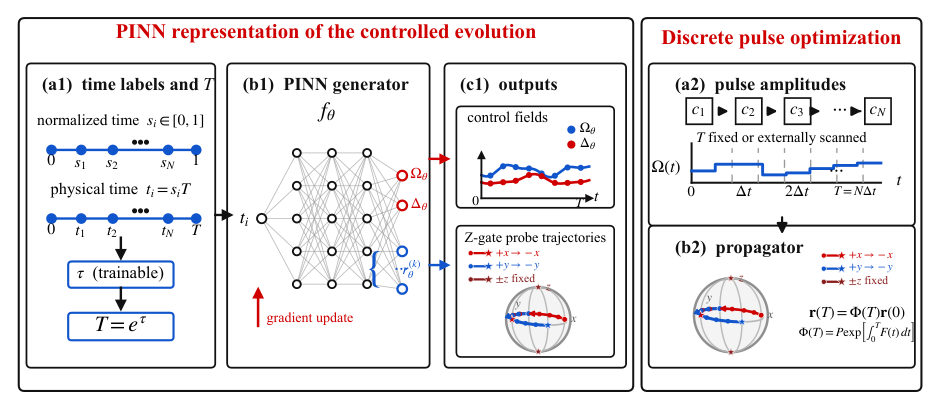
<figcaption class="paper-figure-caption"><b>Fig 1.</b> FIG. 1. Discrete-pulse optimization and a PINN representation of controlled gate dynamics. Left: PINN representation. (a1) Sample labels are mapped to physical times through the trainable duration T = eτ. (b1) A physics-informed neural network (PINN) maps ti to controls and probe trajectories. (c1) The outputs are differentiable over the gate interval; the Bloch sphere sketches representative Z-gate probe motion. The learned fields are checked after training by independent fourth-order Runge–Kutta (RK4) propagation. Right: discrete-pulse reference. (a2) The optimized object is a list of pulse amplitudes on a fixed or externally scanned time grid. (b2) State motion is obtained by propagating...</figcaption>
</figure>
<figure class="paper-figure-card">
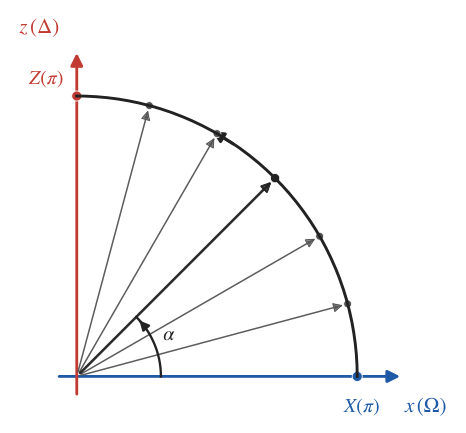
<figcaption class="paper-figure-caption"><b>Fig 2.</b> FIG. 2. Rotation axes in the controlled x–z plane. The family ˆn(α) = (cos α, 0, sin α) interpolates between X(π) and Z(π) using the available Ωand ∆channels.</figcaption>
</figure>
<figure class="paper-figure-card">
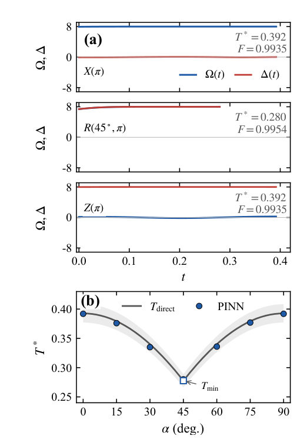
<figcaption class="paper-figure-caption"><b>Fig 3.</b> FIG. 3. Organization under the minimal prescription. (a) Representative controls for X(π), R(45◦, π), and Z(π) recover saturated square-pulse structure without prescribing a square- pulse ansatz. (b) The optimized durations T ∗for all seven in-plane gates follow the Pontryagin-based direct-control pre- diction Tdirect of Eq. (16); the shaded band marks ±4%.</figcaption>
</figure>
<figure class="paper-figure-card">
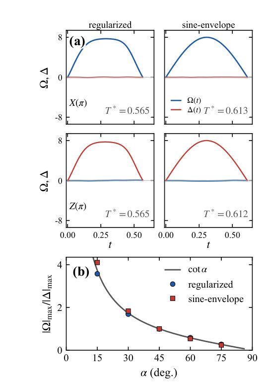
<figcaption class="paper-figure-caption"><b>Fig 4.</b> FIG. 4. Pulse-shape prescriptions and the geometric channel- division law. (a) Regularized and sine-envelope controls for the in-plane X(π) and Z(π) gates, with T ∗marked in each panel. (b) The peak-amplitude ratio |Ω|max/|∆|max follows cot α for both prescriptions, showing that the channel-division law is set by the target geometry and survives pulse-shape constraints. Numerical weights are listed in Appendix B.</figcaption>
</figure>
<figure class="paper-figure-card">
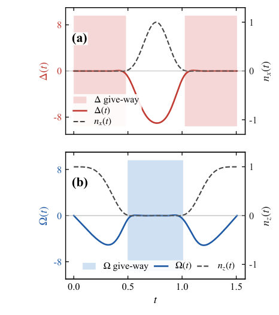
<figcaption class="paper-figure-caption"><b>Fig 5.</b> FIG. 6. Automatic coordination in the geometric Z gate, shown on a common time axis with the same color convention as Fig. 5. (a) ∆(t) (red) versus nx(t) (dashed). The red-shaded bands mark where |nx| →0, which forces ∆→0 because E = 1 2(Ωnx + ∆nz) then reduces to 1</figcaption>
</figure>
</div>

<p><strong>Summary.</strong> This paper pioneers an evolution-level approach to quantum optimal control using Physics-Informed Neural Networks (PINNs). Instead of optimizing pulses, it optimizes the entire controlled dynamical process on the Bloch sphere. This method allows researchers to design gates that are not only high-fidelity but also physically diagnosable and adaptable to complex hardware constraints.</p>
<p><strong>Why it may be interesting.</strong> This work provides a powerful, modern computational tool for quantum control that moves beyond simple time-domain pulse shaping by enforcing physical laws directly into the optimization objective, which is highly relevant for designing robust quantum hardware protocols.</p>
<details>
<summary>Detailed structure</summary>
<p><strong>Main problem.</strong> The paper addresses how to optimize quantum gate design by treating the entire controlled evolution, rather than just the input pulse amplitudes, as the object of optimization.</p>
<p><strong>Main result.</strong> Using Physics-Informed Neural Networks (PINNs) allows for a unified, differentiable framework that optimizes control fields, trajectories, and duration simultaneously, yielding physically readable controls.</p>
<p><strong>Method.</strong> The authors employ PINNs to encode the Bloch equation dynamics as constraints within the loss function, enabling end-to-end optimization of the quantum process.</p>
<p><strong>Model / system.</strong> The system is a single qubit whose evolution is modeled on the Bloch sphere and governed by a dissipative Bloch vector field ($\dot{\mathbf{r}} = \mathbf{F}[\mathbf{r}, \Omega, \Delta]$).</p>
<p><strong>Key observables.</strong> Process fidelity ($    ext{F}<em ext_avg="ext{avg">{    ext{proc}}$), average gate fidelity ($   ext{F}</em>$), and the residual geometric error for path constraints.}</p>
<p><strong>Important parameters / regimes.</strong> Dissipation rates ($\Gamma_1, \Gamma_2$), optimization weights ($\alpha_{	ext{dyn}}, eta_{	ext{gate}}$), and the trainable duration $T$.</p>
<p><strong>Assumptions / limitations.</strong> The primary assumption is that the continuous dynamics can be accurately represented by a differentiable function learned via PINNs, which unifies previously separated optimization steps.</p>
<p><strong>Figures summary.</strong> Figures compare discrete pulse optimization methods against the proposed PINN generator approach for visualizing control field and trajectory learning.</p>
<p><strong>Paper structure.</strong> The paper introduces the limitation of traditional pulse optimization, proposes the continuous PINN framework to model the full evolution, details the loss function incorporating dynamics and gate requirements, and validates this method on both standard rotation gates and geometrically constrained gates.</p>
</details>
<details>
<summary>Abstract</summary>
<p>Quantum gate design is often represented as pulse optimization, although the physical object that implements a gate is the full controlled evolution generated by the pulse. Here we use physics-informed neural networks to represent single-qubit gate design at this evolution level: the control fields, the Bloch-state trajectories, and the total duration are learned together under the Bloch equation. This changes the optimized object from pulse amplitudes to a differentiable physical process whose structure can be inspected and refined. For rotation gates, the optimized evolutions recover the physical organization expected for bounded single-qubit control, with no prescribed pulse ansatz or duration scan. For a geometric gate, the representation identifies localized bottlenecks in maintaining the geometric condition and turns this diagnosis into feedback, reducing the residual path error while preserving high fidelity. Thus physics-informed learning is used not only to synthesize gates, but also to make optimized quantum controls physically readable, diagnosable, and locally refinable. This process-level view may be especially useful for adapting gates to hardware-specific, task-specific, and locally varying experimental constraints.</p>
</details>
<p><sub><a href="#top">↑ back to top</a></sub></p>

<p><a id="paper-2607.15158"></a></p>
<h3 id="fast-two-dimensional-tensor-network-contraction-via-subspace-iteration"><a href="http://arxiv.org/abs/2607.15158v1">Fast two-dimensional tensor-network contraction via subspace iteration</a></h3>
<p><strong>Authors:</strong> Yining Zhang, Philippe Corboz<br>
<strong>Type:</strong> theory · <strong>Category:</strong> numerical methods · <strong>PDF:</strong> <a href="https://arxiv.org/pdf/2607.15158v1">https://arxiv.org/pdf/2607.15158v1</a><br>
<strong>Analysis basis:</strong> full PDF text, analyzed in chunks
<strong>Topic relevance:</strong> <code>methods for driven-dissipative</code> <strong>3/5</strong> · <code>analog quantum simulation</code> <strong>2/5</strong> · <code>entanglement &amp; information structure</code> <strong>1/5</strong> · <code>exotic spin models in light-matter</code> <strong>1/5</strong> · <code>non-equilibrium dynamics</code> <strong>1/5</strong></p>
<div class="figure-strip-hint">↔ Scroll figures horizontally</div>
<div class="paper-figures-scroll">
<figure class="paper-figure-card">
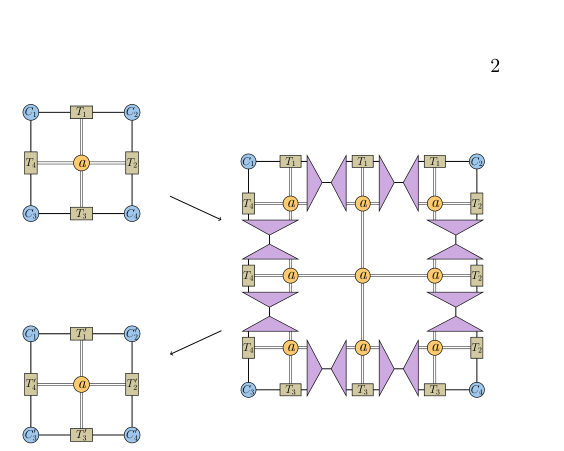
<figcaption class="paper-figure-caption"><b>Fig 1.</b> FIG. 1. One full CTMRG step. The single-site environ- ment (C1,...,4, T1,...,4) (top left) grows in all directions (right). Each corner becomes an enlarged corner, and each edge is enlarged by inserting the bulk tensor a. Projectors are con- structed to truncate the χD2 bonds back to χ. Contracting the enlarged corners and edges yields the updated environ- ment (C′ 1,...,4, T ′ 1,...,4) (bottom left).</figcaption>
</figure>
<figure class="paper-figure-card">
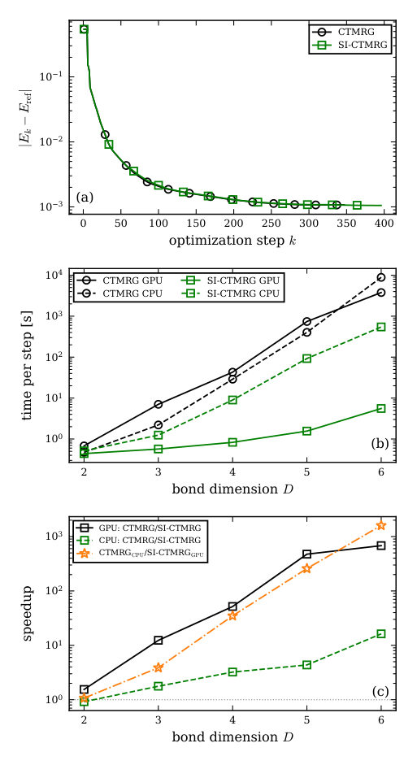
<figcaption class="paper-figure-caption"><b>Fig 2.</b> FIG. 2. CTMRG vs. SI-CTMRG for the triangular Heisen- berg model. (a) Convergence of the energy, |Ek−Eref| per L-BFGS iteration at D=5, χ=100, where Eref = −0.55160 is the thermodynamic-limit reference energy of Ref. [12]. (b) Time per optimization step (forward+backward) vs. D at χ=20, 45, 80, 100, 144 for D=2, . . . , 6 on a single H100 GPU (solid lines) and an 8-core CPU (dashed lines). (c) Speedup ratios: algorithmic (CTMRG/SI-CTMRG at fixed hard- ware) on GPU and on CPU, and the combined ratio CTMRGCPU/SI-CTMRGGPU.</figcaption>
</figure>
<figure class="paper-figure-card">
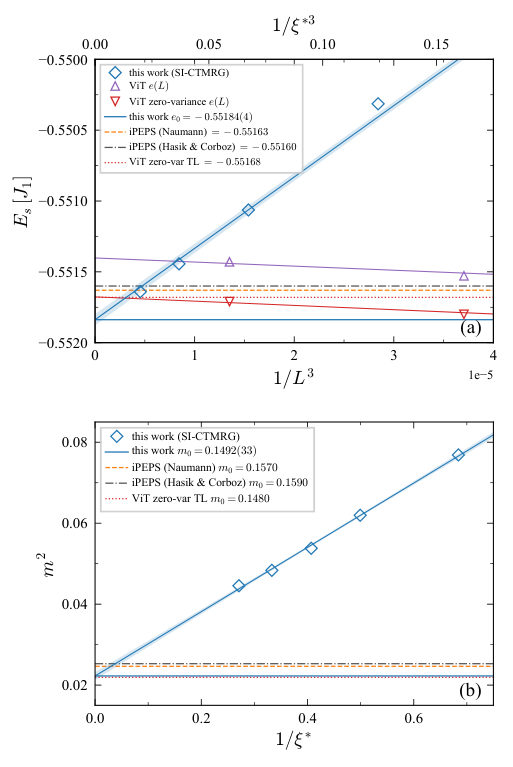
<figcaption class="paper-figure-caption"><b>Fig 3.</b> FIG. 3. Triangular-lattice Heisenberg benchmark. (a) En- ergy per site of our D = 4, . . . , 8 optimized states plotted against 1/ξ∗3 (top axis) together with the ViT wave func- tion energies and its corresponding zero-variance extrapolated points of Ref. [54] against 1/L3 (bottom axis); the solid blue line is our linear FCLS extrapolation giving e0 = −0.55184(4). Horizontal lines show other thermodynamic-limit (TL) refer- ence values: iPEPS results by Naumann et al. [53] (−0.55163), Hasik &amp; Corboz [12] (−0.55160), and the ViT zero-variance result [54] (−0.55168). (b) Squared sublattice magnetiza- tion m2 vs. 1/ξ∗for the same states; the solid blue line shows the linear extrapolation m2(ξ∗)...</figcaption>
</figure>
<figure class="paper-figure-card">
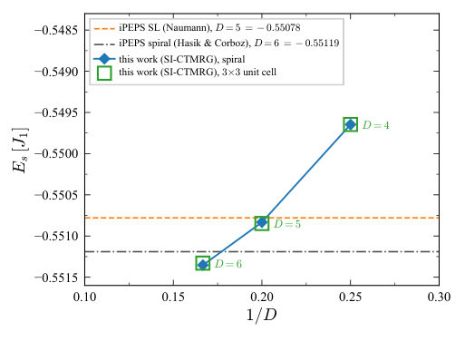
<figcaption class="paper-figure-caption"><b>Fig 4.</b> FIG. 4. Ground-state energy per site Es of the triangular Heisenberg antiferromagnet versus 1/D, obtained with SI- CTMRG. Blue diamonds show the single-site spiral ansatz and green open squares the three-sublattice 3 × 3 unit-cell ansatz (D = 4, 5, 6); the two ans¨atze yield matching energies at each D. Horizontal lines mark the D = 5 square-lattice iPEPS result of Naumann et al. [53] (−0.55078) and the D = 6 spiral iPEPS result of Hasik &amp; Corboz [12] (−0.55119). The 3 × 3 unit-cell energies are optimized at χopt = 80, 100, 144 and evaluated up to χmax = 800, 800, 656 for D = 4, 5, 6, re- spectively.</figcaption>
</figure>
</div>

<p><strong>Summary.</strong> This paper introduces Subspace Iteration CTMRG (SI-CTMRG) to drastically improve the computational efficiency of calculating properties on infinite projected entangled-pair states (iPEPS). By replacing costly large-matrix Singular Value Decompositions with smaller, iterative updates, the method shifts the bottleneck to GPU-friendly tensor contractions. It successfully applies this technique to the triangular Heisenberg antiferromagnet, achieving state-of-the-art results much faster than previous methods.</p>
<p><strong>Why it may be interesting.</strong> While focused on condensed matter models, the core contribution is a highly efficient numerical technique for tensor network contractions (iPEPS/CTMRG), which has broad applicability in simulating quantum many-body systems beyond standard DMRG limits.</p>
<details>
<summary>Detailed structure</summary>
<p><strong>Main problem.</strong> The primary goal is to improve the computational efficiency of calculating observables on infinite projected entangled-pair states (iPEPS) by accelerating the Corner Transfer Matrix Renormalization Group (CTMRG) contraction step.</p>
<p><strong>Main result.</strong> The proposed SI-CTMRG method shifts the dominant cost from computationally expensive SVDs to tensor contractions, yielding significant speedups (up to two orders of magnitude) and achieving state-of-the-art results for the triangular Heisenberg antiferromagnet on modern GPUs.</p>
<p><strong>Method.</strong> It introduces Subspace Iteration CTMRG (SI-CTMRG), a QR-based projector construction that replaces large-matrix SVDs with smaller, iterative updates followed by a small SVD. This makes the method highly suitable for GPU acceleration and fixed-point automatic differentiation.</p>
<p><strong>Model / system.</strong> The method is demonstrated on two-dimensional quantum lattice systems, specifically using the spin-1/2 nearest-neighbor Heisenberg antiferromagnet Hamiltonian on the triangular lattice, which exhibits 120-degree magnetic order.</p>
<p><strong>Key observables.</strong> Energy per site ($e$), local magnetic moment ($m$), and correlation length ($\xi$).</p>
<p><strong>Important parameters / regimes.</strong> Bond dimension ($\chi$), oversampling parameter ($p$), and computational time/GPU resources (H100).</p>
<p><strong>Assumptions / limitations.</strong> The standard CTMRG bottleneck is the cubic scaling of large-matrix SVDs, which SI-CTMRG circumvents by using subspace iteration updates.</p>
<p><strong>Figures summary.</strong> Figures compare energy convergence and time per step between standard CTMRG and SI-CTMRG; Figure 3 shows linear extrapolation plots for ground state properties ($e$ vs $1/\xi^{*3}$) comparing results to other methods.</p>
<p><strong>Paper structure.</strong> The paper introduces the limitations of standard CTMRG, details the novel SI-CTMRG algorithm using QR decomposition and subspace iteration, applies it to the triangular Heisenberg model, validates its efficiency via speedup comparisons, and finally presents extrapolated ground state properties consistent across different ansatz sizes.</p>
</details>
<details>
<summary>Abstract</summary>
<p>The corner transfer matrix renormalization group (CTMRG) is one of the standard contraction methods for infinite projected entangled-pair states (iPEPS), but its computational cost is dominated by repeated truncated singular value decompositions (SVDs). We introduce subspace-iteration CTMRG (SI-CTMRG), a QR-based projector construction that replaces each large-matrix SVD with an SVD of a much smaller matrix. The resulting algorithm shifts the dominant cost from decompositions to tensor contractions, making it highly suited to GPU acceleration and yielding speedups of up to two orders of magnitude over standard CTMRG. We demonstrate the efficiency and accuracy of the method for the triangular-lattice Heisenberg antiferromagnet, reaching state-of-the-art iPEPS results on a single H100 GPU in approximately 10 hours of computation.</p>
</details>
<p><sub><a href="#top">↑ back to top</a></sub></p>

<p><a id="paper-2607.14829"></a></p>
<h3 id="monopole-spin-density-wave-states-in-magnetic-weyl-semimetals"><a href="http://arxiv.org/abs/2607.14829v1">Monopole Spin Density Wave States in Magnetic Weyl Semimetals</a></h3>
<p><strong>Authors:</strong> Xi Luo<br>
<strong>Type:</strong> theory · <strong>Category:</strong> strongly correlated electrons · <strong>PDF:</strong> <a href="https://arxiv.org/pdf/2607.14829v1">https://arxiv.org/pdf/2607.14829v1</a><br>
<strong>Analysis basis:</strong> full PDF text, analyzed in chunks
<strong>Topic relevance:</strong> <code>exotic spin models in light-matter</code> <strong>3/5</strong> · <code>spintronics-quantum-optics interface</code> <strong>3/5</strong> · <code>Keldysh / 2PI / non-Gaussian methods</code> <strong>1/5</strong> · <code>analog quantum simulation</code> <strong>1/5</strong></p>
<div class="figure-strip-hint">↔ Scroll figures horizontally</div>
<div class="paper-figures-scroll">
<figure class="paper-figure-card">
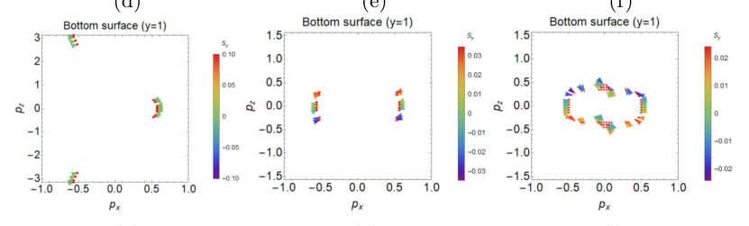
<figcaption class="paper-figure-caption"><b>Fig 1.</b> FIG. 1. (color online) (a), (b), and (c) are the bulk bands along pz axis. px = py = 0 and V0 = 0.4. (a) Without the HM term. (b) κ1 = 0.4 and κ2 = 0. (c) κ1 = 0 and κ2 = 0.4. (d), (e), and (f) are the band structures with finite length (Ny = 20 sites) along y direction that correspond to (a), (b), and (c), respectively. (g), (h), and (i) are the spin polarizations along the Fermi arcs of the bottom surfaces in (d), (e), and (f), respectively. (e) and (f) are plotted within the folded (magnetic) Brillouin zone. The red points stand for the momentum locations of the Fermi arc states. The arrows indicate the directions of spins in the Sx-Sz plane and their color labels the magnitude of Sy.</figcaption>
</figure>
<figure class="paper-figure-card">
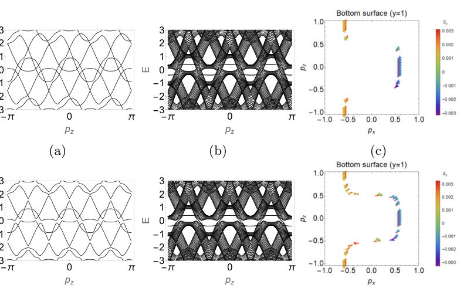
<figcaption class="paper-figure-caption"><b>Fig 2.</b> FIG. 2. (color online) (a) and (d) are the bulk bands along pz axis for Q = 2π/3. px = py = 0 and V0 = 0.4. (a) κ1 = 0.4 and κ2 = 0. (d) κ1 = 0 and κ2 = 0.4. (b) and (e) are the band structures with finite length (Ny = 20 sites) along y direction that correspond to (a) and (d), respectively. (c) and (f) are the spin polarizations along the Fermi arcs within the folded Brillouin zone of the bottom surfaces in (b) and (e), respectively. The red points stand for the momentum locations of the Fermi arc states. The arrows indicate the directions of spins in the Sx-Sz plane and their color labels the magnitude of Sy.</figcaption>
</figure>
</div>

<p><strong>Summary.</strong> This work explores monopole Spin Density Wave (SDW) phases in magnetic Weyl semimetals by developing a theoretical framework based on monopole harmonic functions. The research demonstrates that different types of SDW ordering yield unique, measurable signatures in electronic band structures and surface spin polarizations. It unifies the understanding of topologically ordered states across various pairing channels.</p>
<p><strong>Why it may be interesting.</strong> The explicit connection between topological invariants (Berry curvature, quantum geometric tensor) and magnetically induced pairing states provides a powerful framework for understanding emergent phenomena in correlated materials relevant to spintronics.</p>
<details>
<summary>Detailed structure</summary>
<p><strong>Main problem.</strong> The study investigates monopole Spin Density Wave (SDW) states arising from particle-hole pairing in magnetic Weyl semimetals, extending the understanding of topologically ordered phases.</p>
<p><strong>Main result.</strong> The SDW order parameter is described by monopole harmonic functions and realizes ideal quantum geometry in the weak-coupling limit. Helical and cycloidal orders produce distinct signatures observable via spin-ARPES.</p>
<p><strong>Method.</strong> Theoretical derivation using mean-field Hamiltonians, projection onto low-energy Fermi surfaces, and analysis of topological invariants like the pairing quantum geometric tensor.</p>
<p><strong>Model / system.</strong> The system is a magnetic Weyl semimetal modeled with nested Fermi surfaces. The Hamiltonian includes terms for the underlying band structure ($h_0$) and the SDW mean field ($H_M$).</p>
<p><strong>Key observables.</strong> Band structures, Fermi arc distributions, surface spin polarization patterns, and the quantum geometric tensor.</p>
<p><strong>Important parameters / regimes.</strong> Weak-coupling limit; chirality of enclosed Weyl nodes; nesting vector Q (e.g., $Q=2\pi/3$ vs. same-chirality pairing).</p>
<p><strong>Assumptions / limitations.</strong> Assumes particle-hole pairing occurs between Fermi surfaces enclosing Weyl nodes of the same chirality for the primary focus, though comparisons are made with other nesting vectors.</p>
<p><strong>Figures summary.</strong> Figures illustrate bulk and surface band structures, showing distinct spin polarization patterns along Fermi arcs depending on whether the SDW order is helical or cycloidal. Comparisons are drawn between different pairing scenarios.</p>
<p><strong>Paper structure.</strong> The paper first introduces the concept of monopole SDW states in Weyl semimetals, deriving the necessary gap functions using monopole harmonics. It then analyzes specific magnetic orders (helical vs. cycloidal) by solving a lattice model Hamiltonian and calculating diagnostic observables like spin polarization and quantum geometry tensors. Finally, it compares these results to other nesting conditions.</p>
</details>
<details>
<summary>Abstract</summary>
<p>The interplay between topology and magnetism in Weyl semimetals has recently emerged as a fertile ground for novel quantum phases. While monopole harmonic order parameters have been established for superconductivity and charge density waves in these systems, their spin density wave counterparts remain unexplored. Here we introduce monopole spin density wave (SDW) states arising from particle-hole pairing between nested Fermi surfaces enclosing Weyl nodes of the same chirality. We demonstrate that the SDW order parameter inherits a nontrivial pairing Berry phase and is described by monopole harmonic functions that exhibit topologically protected nodal structures in the gap function. Through a concrete lattice model, we show that helical and cycloidal SDW orders produce distinct signatures in band structures, Fermi arc distributions, and surface spin polarization patterns, which can be directly resolved by spin- and angle-resolved photoemission spectroscopy. Remarkably, we find that the quantum geometric tensor of the monopole pairing realizes ideal quantum geometry in the weak-coupling limit, where quantum distance fluctuations are entirely governed by Berry curvature. Our results not only unify the understanding of monopole ordered states across pairing channels but also provide experimental avenues for distinguishing competing magnetic orders in ReAlX (Re=rare earth elements, X=Si, Ge) materials and suggest potential applications in topological spintronics.</p>
</details>
<p><sub><a href="#top">↑ back to top</a></sub></p>

<p><a id="paper-2607.15236"></a></p>
<h3 id="analytical-and-numerical-study-of-quartic-nonlinear-electrodynamics-in-holographic-fermion-systems"><a href="http://arxiv.org/abs/2607.15236v1">Analytical and Numerical Study of Quartic Nonlinear Electrodynamics in Holographic Fermion Systems</a></h3>
<p><strong>Authors:</strong> Vitor Neves da Silva, Luiz Antonio Barreiro<br>
<strong>Type:</strong> theory · <strong>Category:</strong> strongly correlated electrons · <strong>PDF:</strong> <a href="https://arxiv.org/pdf/2607.15236v1">https://arxiv.org/pdf/2607.15236v1</a><br>
<strong>Analysis basis:</strong> full PDF text, analyzed in chunks
<strong>Topic relevance:</strong> <code>Keldysh / 2PI / non-Gaussian methods</code> <strong>3/5</strong> · <code>Kondo &amp; dissipative impurity</code> <strong>1/5</strong> · <code>analog quantum simulation</code> <strong>1/5</strong> · <code>methods for driven-dissipative</code> <strong>1/5</strong> · <code>non-equilibrium dynamics</code> <strong>1/5</strong></p>
<div class="figure-strip-hint">↔ Scroll figures horizontally</div>
<div class="paper-figures-scroll">
<figure class="paper-figure-card">
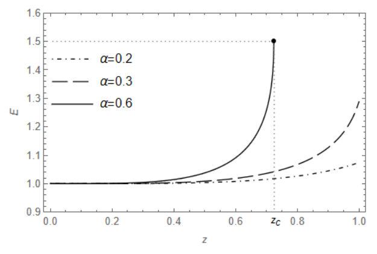
<figcaption class="paper-figure-caption"><b>Fig 1.</b> Figure 1: Radial electric field E(z) for different values of the nonlinear coupling α′, with ρ = β = 1. For sufficiently small nonlinear coupling, the electric field remains regular throughout the holographic interval. As the coupling increases, the physical branch devel- ops a critical point at z = zc, where the differential constitutive response vanishes. Beyond this point, no globally continuous positive solution connected to the Maxwell branch exists.</figcaption>
</figure>
<figure class="paper-figure-card">
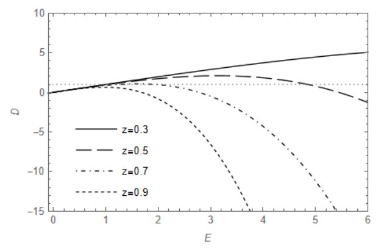
<figcaption class="paper-figure-caption"><b>Fig 2.</b> Figure 2: Constitutive relation D(E, z) for representative values of the holographic co- ordinate. Near the AdS boundary the constitutive response is essentially linear, whereas toward the infrared region the quartic interaction progressively deforms the curve into a cubic profile. The horizontal line D = ρ intersects the constitutive curve at a unique pos- itive solution for z &lt; zc, becomes tangent at z = zc, and no longer intersects the physical branch for z &gt; zc, illustrating the loss of invertibility of the constitutive map</figcaption>
</figure>
<figure class="paper-figure-card">
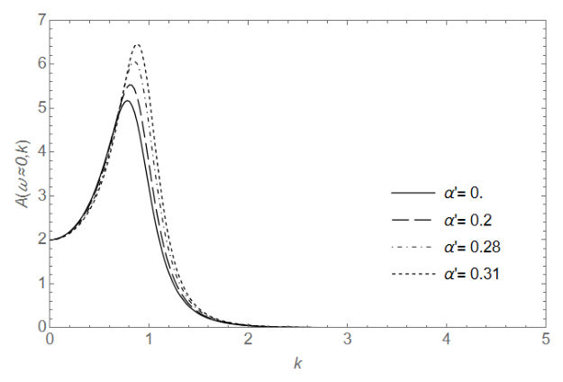
<figcaption class="paper-figure-caption"><b>Fig 3.</b> Figure 3: Momentum dependence of the fermionic spectral function A(ω ≃0, k) for different values of the nonlinear coupling α′. Increasing the quartic gauge interaction shifts the spectral peak toward larger momenta while simultaneously enhancing its intensity, indicating a systematic modification of the holographic Fermi surface.</figcaption>
</figure>
<figure class="paper-figure-card">

<figcaption class="paper-figure-caption"><b>Fig 4.</b> Figure 3 shows that the spectral function develops a well-defined quasiparticle-like peak for every value of α′ considered. The persistence of this sharp maximum demonstrates that the holographic Fermi surface remains robust under the quartic electromagnetic correction. Nevertheless, both the peak position and its spectral weight evolve consistently as the nonlinear interaction is increased.</figcaption>
</figure>
<figure class="paper-figure-card">
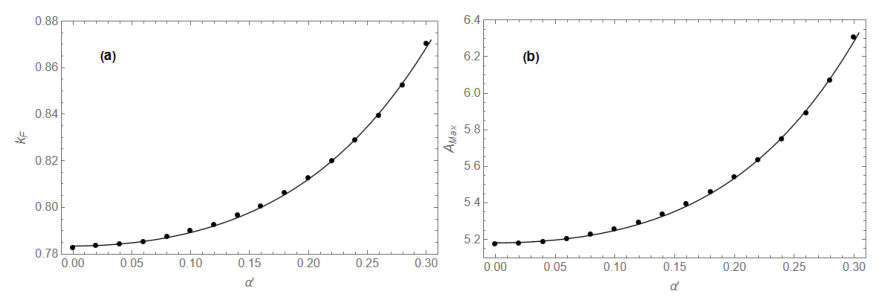
<figcaption class="paper-figure-caption"><b>Fig 5.</b> Figure 4: Dependence of the fermionic observables on the nonlinear coupling α′. (a) Fermi momentum kF as a function of α′. (b) Maximum spectral weight Amax = A(ω ≃0, kF ) as a function of α′. Filled circles denote the numerical data, while the solid curves represent least-squares polynomial fits containing only even powers of α′. The excellent agreement confirms the even-power dependence predicted by the analytical structure of the nonlinear gauge sector discussed in Sec. III.</figcaption>
</figure>
</div>

<p><strong>Summary.</strong> This paper analyzes how quartic nonlinearities in the gauge field affect charged fermions propagating holographically. By solving the modified electrodynamics background, the authors calculate the fermionic spectral function and find that these nonlinear terms shift the Fermi momentum and enhance the excitation weight. This demonstrates a clear mechanism by which bulk nonlinearities propagate to observable boundary physics.</p>
<p><strong>Why it may be interesting.</strong> While focused on condensed matter/gravity duality, the explicit calculation of fermionic spectral functions and quasiparticle renormalization due to nonlinear bulk couplings provides a theoretical analogue for understanding how higher-order interactions modify low-energy excitations in strongly correlated systems.</p>
<details>
<summary>Detailed structure</summary>
<p><strong>Main problem.</strong> The study investigates how leading string-inspired quartic corrections modify holographic fermionic observables within a bottom-up AdS4/CFT3 model.</p>
<p><strong>Main result.</strong> The quartic interaction increases the chemical potential and enhances the spectral weight of fermions, causing the Fermi momentum to shift without destroying the holographic Fermi surface.</p>
<p><strong>Method.</strong> The authors analyze the nonlinear electrostatic background derived from the gauge sector using an exact first integral, then solve the resulting radial Dirac equation for charged probe fermions.</p>
<p><strong>Model / system.</strong> The system involves charged probe Dirac fermions propagating in a fixed Reissner–Nordström-AdS geometry. The gauge field dynamics are governed by Maxwell electrodynamics supplemented by a quartic nonlinear term ($\alpha'^2 F^4$).</p>
<p><strong>Key observables.</strong> Retarded Green's function, spectral function $A(\omega, k)$, chemical potential ($\mu$), and Fermi momentum ($k_F$).</p>
<p><strong>Important parameters / regimes.</strong> Quartic coupling strength ($\alpha'$), black hole charge ($q$), fermion charge ($q_f$), and the ratio $T/\mu$.</p>
<p><strong>Assumptions / limitations.</strong> The analysis operates within the probe approximation, meaning the fermions do not backreact on the geometry or gauge field. The treatment is restricted to the leading $\alpha'^2 F^4$ correction.</p>
<p><strong>Figures summary.</strong> Figure 3 illustrates the momentum dependence of the spectral function for varying $\alpha'$, showing peak shifting and enhancement; Figure 4 shows the polynomial fits for $k_F$ and maximum spectral weight ($A_{max}$) versus $\alpha'$.</p>
<p><strong>Paper structure.</strong> The paper first analyzes the nonlinear gauge sector to find an exact constitutive relation for the electric field. Subsequently, it uses this background to solve the radial Dirac equation for fermions, calculating observables like the Green's function and spectral function.</p>
</details>
<details>
<summary>Abstract</summary>
<p>We study how the leading string-inspired quartic correction $α'^2 F^4$ modifies holographic fermionic observables in a bottom-up $AdS_4/CFT_3$ model. The gauge sector is described by Maxwell electrodynamics supplemented by the quartic interaction, while the geometry is kept fixed in the probe approximation. We first analyze the nonlinear electrostatic background and derive an exact first integral of the gauge equation, the associated constitutive relation for the radial electric field, the critical coupling for globally regular solutions, and weak-coupling expansions for the electrostatic potential and chemical potential. We then use these backgrounds to compute the retarded Green's function and spectral function of charged probe fermions. The quartic interaction increases the chemical potential, lowers the effective ratio $T/μ$, shifts the Fermi momentum, and enhances the spectral weight without destroying the holographic Fermi surface. We further show that the fermionic observables inherit the even-power dependence on $α'$ implied by the analytic structure of the gauge sector. The resulting probe-limit analysis makes explicit how quartic bulk nonlinearities propagate from the bulk to boundary fermionic observables.</p>
</details>
<p><sub><a href="#top">↑ back to top</a></sub></p>

<p><a id="paper-2607.14384"></a></p>
<h3 id="circuit-complexity-lower-bounds-for-quantum-spin-glasses"><a href="http://arxiv.org/abs/2607.14384v1">Circuit complexity lower bounds for quantum spin glasses</a></h3>
<p><strong>Authors:</strong> Omar Al-Ghattas, David Gamarnik<br>
<strong>Type:</strong> theory · <strong>Category:</strong> disordered systems and neural networks · <strong>PDF:</strong> <a href="https://arxiv.org/pdf/2607.14384v1">https://arxiv.org/pdf/2607.14384v1</a><br>
<strong>Analysis basis:</strong> full PDF text, analyzed in chunks
<strong>Topic relevance:</strong> <code>exotic spin models in light-matter</code> <strong>3/5</strong> · <code>entanglement &amp; information structure</code> <strong>2/5</strong> · <code>analog quantum simulation</code> <strong>1/5</strong> · <code>non-equilibrium dynamics</code> <strong>1/5</strong></p>
<div class="figure-strip-hint">↔ Scroll figures horizontally</div>
<div class="paper-figures-scroll">
<figure class="paper-figure-card">
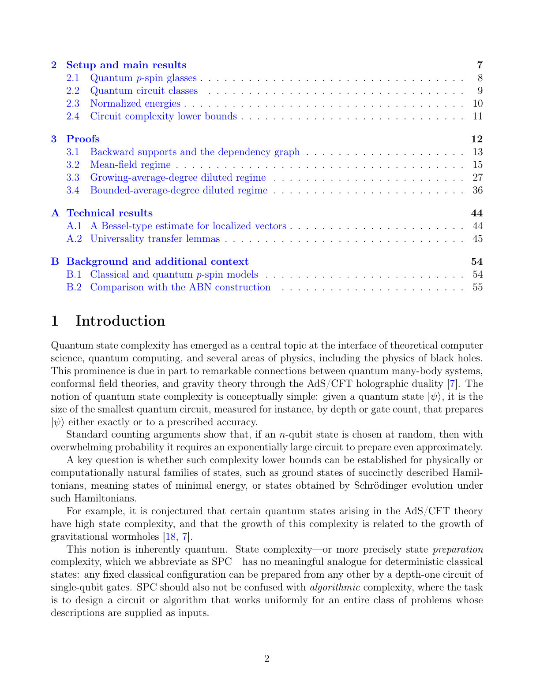
<figcaption class="paper-figure-caption"><b>Fig 1.</b> Low-resolution page preview, page 2</figcaption>
</figure>
<figure class="paper-figure-card">
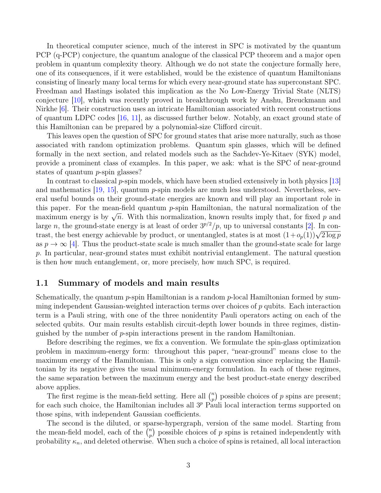
<figcaption class="paper-figure-caption"><b>Fig 2.</b> Low-resolution page preview, page 3</figcaption>
</figure>
<figure class="paper-figure-card">
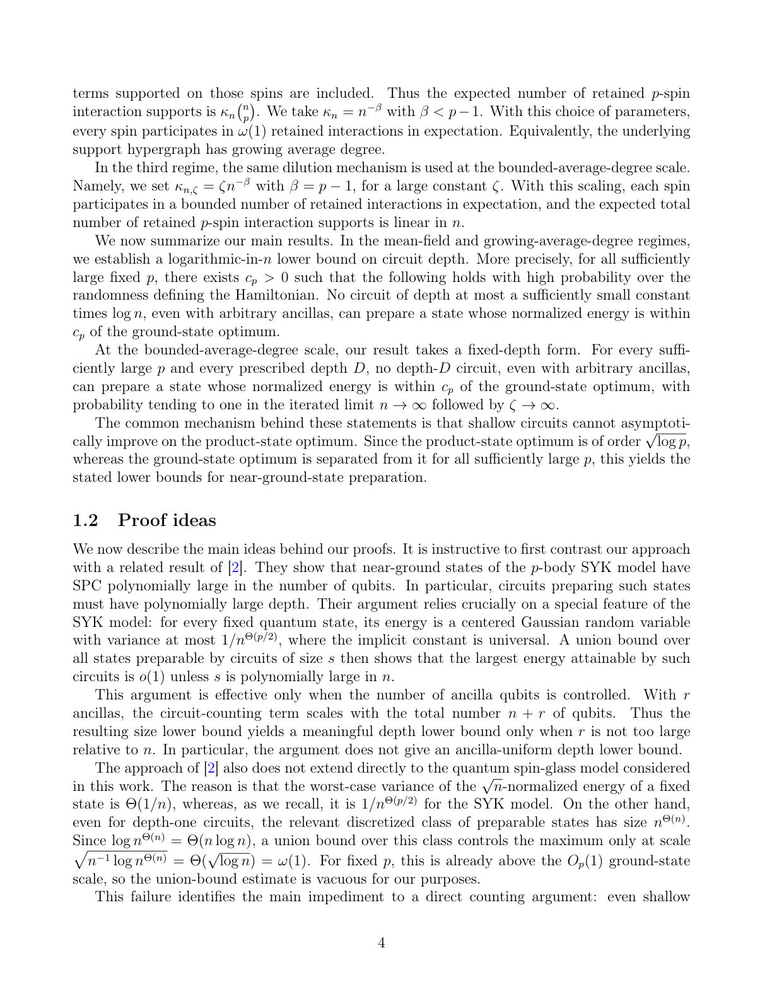
<figcaption class="paper-figure-caption"><b>Fig 3.</b> Low-resolution page preview, page 4</figcaption>
</figure>
<figure class="paper-figure-card">
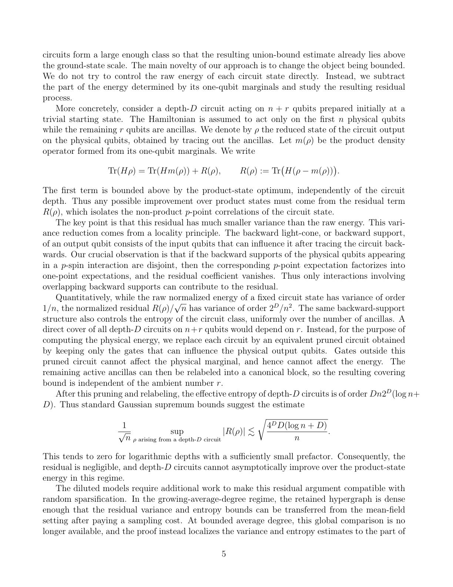
<figcaption class="paper-figure-caption"><b>Fig 4.</b> Low-resolution page preview, page 5</figcaption>
</figure>
<figure class="paper-figure-card">
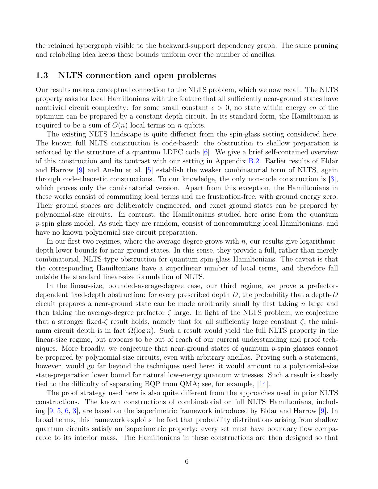
<figcaption class="paper-figure-caption"><b>Fig 5.</b> Low-resolution page preview, page 6</figcaption>
</figure>
</div>

<p><strong>Summary.</strong> This paper establishes fundamental circuit complexity lower bounds for preparing near-ground states of random quantum $p$-spin glasses. By analyzing the required entanglement structure, the authors prove that achieving low energy necessitates deep quantum circuits unless the interaction structure is highly constrained. This offers a probabilistic route to understanding state preparation difficulty in disordered quantum matter.</p>
<p><strong>Why it may be interesting.</strong> This work provides a rigorous, complexity-theoretic lower bound on how efficiently quantum information can be encoded in disordered physical systems, which has implications for understanding quantum simulation and computation limits.</p>
<details>
<summary>Detailed structure</summary>
<p><strong>Main problem.</strong> The central question is determining the circuit complexity (state preparation complexity) required to prepare quantum states near the ground state of random many-body Hamiltonians.</p>
<p><strong>Main result.</strong> The authors prove that for quantum $p$-spin glasses, preparing near-ground states requires a minimum circuit depth of $\Omega(p \log n)$ in the growing average degree regime, and establishes a fixed-depth obstruction in the bounded average degree regime.</p>
<p><strong>Method.</strong> The analysis uses techniques involving studying the 'residual process' relative to product states and applying concentration inequalities (like Gaussian supremum bounds) to derive lower bounds on circuit depth.</p>
<p><strong>Model / system.</strong> The study focuses on quantum $p$-spin glasses, defined by random Hamiltonians acting on $n$ qubits via Pauli strings. The model is analyzed in different regimes: mean-field, growing average degree, and bounded average degree.</p>
<p><strong>Key observables.</strong> Circuit depth ($D$), normalized energy of the prepared state relative to the true ground state optimum, and the residual term quantifying deviation from product states.</p>
<p><strong>Important parameters / regimes.</strong> Number of qubits ($n$), spin interaction order ($p$), and parameters defining the sparsity/average degree ($\kappa_n$ or $\zeta$).</p>
<p><strong>Assumptions / limitations.</strong> The results hold uniformly over circuits with an arbitrary number of ancilla qubits, and comparisons are drawn to related models like code-based Hamiltonians.</p>
<p><strong>Paper structure.</strong> The paper establishes the problem by contrasting ground state preparation complexity with product-state achievable energies. It then presents separate proofs for the growing average degree regime (yielding $\Omega(\log n)$ depth) and the bounded average degree regime (yielding fixed-depth obstructions). The context is set by comparing these findings to related problems like NLTS.</p>
</details>
<details>
<summary>Abstract</summary>
<p>A central question in quantum information theory is the circuit complexity of states arising from standard many-body models. We study this question for quantum $p$-spin glasses, random Hamiltonians whose interactions act on $p$-tuples of qubits through Pauli strings. Anschuetz, Gamarnik, and Kiani (arXiv:2404.07231) showed that the optimum energy is separated from the best energy achievable by product states. This leaves open whether shallow circuits can close the gap, since even depth-one circuits can generate entanglement.   We show that the entanglement needed to close the product-state gap cannot be generated at shallow depth. When the average interaction degree grows with $n$, we prove that, for all sufficiently large fixed $p$, any circuit preparing an $n$-qubit state whose normalized energy is within a fixed positive constant of the optimum must have depth $Ω_p(\log n)$. In the bounded-average-degree regime, we prove a fixed-depth obstruction: for every fixed $D$, a sufficiently large degree prefactor rules out depth-$D$ preparation of near-ground states. Both results hold uniformly over circuits with an arbitrary number of ancilla qubits.   Our results give an obstruction in the spirit of the No Low-Energy Trivial States problem of Freedman and Hastings (arXiv:1301.1363), but for random quantum spin glasses rather than code-based Hamiltonians such as those of Anshu, Breuckmann, and Nirkhe (arXiv:2206.13228), whose ground states admit polynomial-size preparation circuits. This setting opens a probabilistic route to NLTS-like questions: we recast state-preparation lower bounds for random quantum Hamiltonians as uniform control of Gaussian processes indexed by shallow circuits.</p>
</details>
<p><sub><a href="#top">↑ back to top</a></sub></p>

<p><a id="paper-2607.14435"></a></p>
<h3 id="imaginarity-as-a-resource-within-quantum-coherence-geometric-decomposition-and-operational-conversion"><a href="http://arxiv.org/abs/2607.14435v1">Imaginarity as a Resource within Quantum Coherence: Geometric Decomposition and Operational Conversion</a></h3>
<p><strong>Authors:</strong> Meng-Li Guo, Nannan Guan, Bo Li, Bin Hu, Shao-Ming Fei<br>
<strong>Type:</strong> theory · <strong>Category:</strong> quantum information and computing · <strong>PDF:</strong> <a href="https://arxiv.org/pdf/2607.14435v1">https://arxiv.org/pdf/2607.14435v1</a><br>
<strong>Analysis basis:</strong> full PDF text, analyzed in chunks
<strong>Topic relevance:</strong> <code>entanglement &amp; information structure</code> <strong>3/5</strong> · <code>correlated / nonlocal dissipation</code> <strong>1/5</strong> · <code>driven-dissipative phase transition</code> <strong>1/5</strong> · <code>methods for driven-dissipative</code> <strong>1/5</strong> · <code>non-equilibrium dynamics</code> <strong>1/5</strong></p>
<div class="figure-strip-hint">↔ Scroll figures horizontally</div>
<div class="paper-figures-scroll">
<figure class="paper-figure-card">
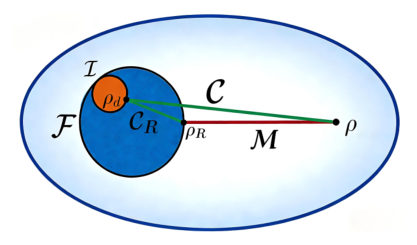
<figcaption class="paper-figure-caption"><b>Fig 1.</b> FIG. 1. Geometric scheme of quantum resource measures. The total coherence of a state is bounded by the sum of its imaginarity (dis- tance to nearest real state) and the residual coherence (distance be- tween real and incoherent reference states), showing that imaginarity is a resource strictly contained within coherence.</figcaption>
</figure>
<figure class="paper-figure-card">
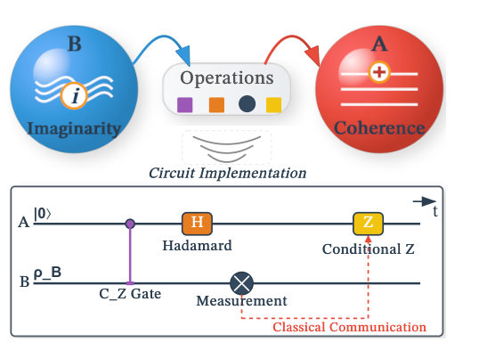
<figcaption class="paper-figure-caption"><b>Fig 2.</b> FIG. 2. Operational conversion of imaginarity into coherence. Upper panel: schematic illustration of the protocol converting imag- inarity in subsystem B into coherence in subsystem A via real op- erations and a Y -basis measurement. Lower panel: corresponding quantum circuit, consisting of a controlled-Z gate, a Hadamard gate on A, a Y -basis measurement on B, and a conditional ZA cor- rection (dashed red line). The protocol achieves the exact equality C′ tr(ρfinal A ) = Mtr(ρB).</figcaption>
</figure>
</div>

<p><strong>Summary.</strong> This paper introduces imaginarity as a quantifiable resource distinct from total quantum coherence. Using geometric decomposition and operational protocols, the authors establish fundamental trade-off relations showing that coherence is bounded by the sum of its imaginary part (imaginarity) and a residual term. This provides crucial theoretical insights for managing resources in distributed quantum technologies.</p>
<p><strong>Why it may be interesting.</strong> This work provides a deep theoretical understanding of how different mathematical components of quantum state structure relate to physical capabilities, offering concrete resource management tools applicable to quantum communication and computation.</p>
<details>
<summary>Detailed structure</summary>
<p><strong>Main problem.</strong> The paper establishes a rigorous framework to quantify imaginarity as a fundamental, quantifiable resource within quantum coherence.</p>
<p><strong>Main result.</strong> It proves that total coherence is bounded by the sum of its purely imaginary component (imaginarity) and a residual component related to basis misalignment. Furthermore, it provides an operational protocol to convert imaginarity into usable coherence.</p>
<p><strong>Method.</strong> The authors use geometric decomposition techniques based on metric distances (like trace distance) to partition quantum states and derive fundamental trade-off inequalities between different resource measures.</p>
<p><strong>Model / system.</strong> The analysis is performed on general quantum states, extending from single qubits to bipartite systems. Dynamics are characterized under diagonal Hamiltonians, showing complementary oscillations of imaginarity and residual coherence.</p>
<p><strong>Key observables.</strong> Quantum Coherence ($C(
ho)$), Imaginarity ($M(
ho)$), Residual Coherence ($CR(
ho)$), and total correlations in bipartite settings.</p>
<p><strong>Important parameters / regimes.</strong> The relationship $C(
ho) \le M(
ho) + CR(
ho)$ is the central constraint, with specific bounds derived for qubit states using trace distance.</p>
<p><strong>Assumptions / limitations.</strong> The analysis relies on defining resource measures via metric distances and assumes physical admissibility of operations for conversion protocols.</p>
<p><strong>Figures summary.</strong> Figures illustrate the geometric relationship $C \le M + CR$ and provide a schematic circuit diagram detailing an operational protocol to convert imaginarity in one subsystem to coherence in another.</p>
<p><strong>Paper structure.</strong> The paper progresses from defining resource measures geometrically, establishing fundamental trade-off theorems for single and bipartite systems, providing explicit conversion protocols (operational proofs), and finally characterizing the dynamics under specific Hamiltonians.</p>
</details>
<details>
<summary>Abstract</summary>
<p>We establish a rigorous framework that identifies imaginarity as a fundamental resource inherent in quantum coherence. By means of a geometric decomposition, we partition coherence into distinct imaginarity and residual components, thereby revealing a universal hierarchical relationship among these resources. For bipartite systems, this decomposition provides explicit bounds on the extent to which nonlocal correlations and imaginarity limit local coherence generation. Furthermore, we devise an explicit operational protocol that converts imaginarity into usable coherence, demonstrating the direct interconvertibility of these resources under physically admissible operations. The dynamical evolution under diagonal Hamiltonians is fully characterized, showing that while total coherence is conserved, imaginarity and residual coherence exhibit complementary oscillations. Our results provide a rigorous geometric and operational characterization of imaginarity as a fundamental constituent of quantum coherence, offering concrete insights for resource management in distributed quantum technologies. The geometric framework and theoretical bounds established herein are fully general, while the explicit conversion protocol and dynamical analysis serve as a compelling proof-of-principle demonstration in qubit systems.</p>
</details>
<p><sub><a href="#top">↑ back to top</a></sub></p>

<p><a id="paper-2607.15121"></a></p>
<h3 id="quantum-lock-in-detection-via-successive-adiabatic-evolution"><a href="http://arxiv.org/abs/2607.15121v1">Quantum Lock-In Detection via Successive Adiabatic Evolution</a></h3>
<p><strong>Authors:</strong> Kangze Li, Siqi Chen, Hao Zhang, Jiazhao Tian, Liantuan Xiao, Gerardo Adesso<br>
<strong>Type:</strong> both · <strong>Category:</strong> other · <strong>PDF:</strong> <a href="https://arxiv.org/pdf/2607.15121v1">https://arxiv.org/pdf/2607.15121v1</a><br>
<strong>Analysis basis:</strong> full PDF text, analyzed in chunks
<strong>Topic relevance:</strong> <code>quantum measurements</code> <strong>3/5</strong> · <code>QC/QI experiment</code> <strong>1/5</strong> · <code>measurement-induced transitions</code> <strong>1/5</strong> · <code>methods for driven-dissipative</code> <strong>1/5</strong> · <code>spintronics-quantum-optics interface</code> <strong>1/5</strong></p>
<div class="figure-strip-hint">↔ Scroll figures horizontally</div>
<div class="paper-figures-scroll">
<figure class="paper-figure-card">
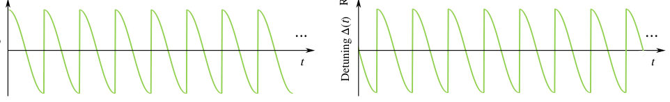
<figcaption class="paper-figure-caption"><b>Fig 1.</b> FIG. 1. Schematic of adiabatic quantum lock-in detection using NV centers in diamond. (a) Flow diagram of adiabatic quantum lock-in detection. The top row shows the laser pulse sequence used to initialize and read out the electron spin state of NV centers. The middle row shows the driving microwave field used to implement the measurement process and gate operations. The bottom row shows the target signal and noise. (b) Rabi frequency and detuning of the driving microwave field used in the measurement process of the in-phase component Isig. (c) Rabi frequency and detuning of the driving microwave field used in the measurement process of the quadrature component Qsig.</figcaption>
</figure>
<figure class="paper-figure-card">
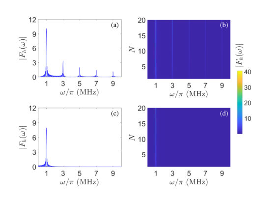
<figcaption class="paper-figure-caption"><b>Fig 2.</b> FIG. 2. Comparison between the filter functions generated by the proposed adiabatic detection sequence and those generated by the conventional dynamical decoupling sequence. (a) The filter function of the conventional dynamical decoupling sequence with N = 5 is plotted as a function of ω. (b) The filter function of the conventional dynamical decoupling sequence is plotted as a function of ω and N. (c) The filter function generated by the proposed adiabatic detection sequence with N = 5 is plotted as a function of ω. (d) The filter function generated by the proposed adiabatic detection sequence is plotted as a function of ω and N.</figcaption>
</figure>
<figure class="paper-figure-card">
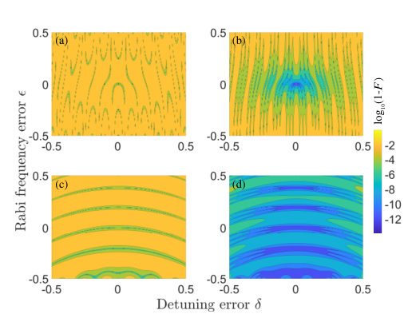
<figcaption class="paper-figure-caption"><b>Fig 3.</b> FIG. 5. Performance of the control sequences under the influence of control errors. The infidelities 1 −F of the control sequences are plotted as functions of the Rabi frequency error strength ϵ and the detuning error strength δ on a logarithmic scale. (a) The CPMG sequence with eight rectangular pulses. (b) The XY8 sequence with rectangular pulses. (c) The sequence consisting of eight repeated adiabatic evolution processes. (d) The adiabatic XY8 sequence used for quantum lock-in detection.</figcaption>
</figure>
<figure class="paper-figure-card">
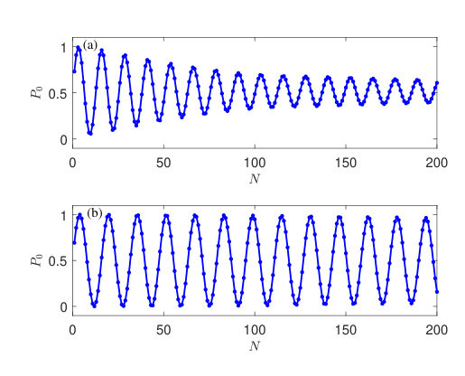
<figcaption class="paper-figure-caption"><b>Fig 4.</b> FIG. 6. Performance of the detection sequences under the influence of random magnetic field fluctuations. The population P0 of the state |0⟩is plotted as a function of the number N of repetitions of each sequence. (a) The XY8 sequence with rectangular pulses. (b) The adiabatic XY8 sequence used for quantum lock-in detection.</figcaption>
</figure>
</div>

<p><strong>Summary.</strong> This paper introduces an advanced quantum protocol for lock-in detection by utilizing successive adiabatic evolution to generate ideal triangular modulation functions. This approach fundamentally overcomes spectral leakage issues present in current methods, enabling the robust and accurate measurement of weak alternating signals. The technique is demonstrated using NV centers in diamond and is presented as a general framework applicable to various controllable quantum systems.</p>
<p><strong>Why it may be interesting.</strong> This work provides a sophisticated theoretical framework for quantum sensing that directly addresses fundamental limitations (spectral leakage) in measurement protocols. The reliance on adiabatic passage connects concepts from quantum control theory to real-world high-sensitivity measurements, which is highly relevant to AMO physics research.</p>
<details>
<summary>Detailed structure</summary>
<p><strong>Main problem.</strong> The core problem is achieving accurate quantum lock-in detection for weak signals buried in noise, overcoming limitations imposed by spectral leakage inherent in existing pulse-based control protocols.</p>
<p><strong>Main result.</strong> The authors propose and demonstrate a general protocol using successive adiabatic evolution that implements triangular modulation, fundamentally solving spectral leakage and providing a robust sensing method.</p>
<p><strong>Method.</strong> The technique relies on adiabatically controlling the time evolution of a quantum probe through carefully designed sequences of Hamiltonian parameters to extract signal components via accumulated relative phases.</p>
<p><strong>Model / system.</strong> The model uses a driven two-level quantum probe described by a Hamiltonian incorporating control and signal terms. Practical implementations are demonstrated using nitrogen-vacancy (NV) centers in diamond, but the protocol is generalizable to other controllable two-level systems.</p>
<p><strong>Key observables.</strong> The key observables measured are relative accumulated phases ($\alpha$ and $eta$) derived from successive quantum evolution steps, which are proportional to integrals involving the unknown signal $M(t)$.</p>
<p><strong>Important parameters / regimes.</strong> Key parameters include the control field strengths ($\Omega_R(t), \Delta(t)$) and the modulation function shape (achieving triangular profiles). The method is robust against experimental imperfections.</p>
<p><strong>Assumptions / limitations.</strong> The primary assumption involves treating the signal coupling term ($H_{	ext{sig}}(t)$) as a weak perturbation during the adiabatic evolution process. It also assumes the applicability of the rotating-wave approximation.</p>
<p><strong>Figures summary.</strong> Not specified, but the notes detail mathematical derivations involving propagators $U(T, 0)$ calculated through sequential application of time-evolution operators for different measurement components ($I_{	ext{sig}}$ and $Q_{	ext{sig}}$).</p>
<p><strong>Paper structure.</strong> The paper first identifies the limitations of current quantum sensing methods. It then introduces the general protocol based on successive adiabatic evolution to achieve triangular modulation. The methodology is detailed by deriving the necessary propagators for measuring in-phase and quadrature components, followed by a discussion of its practical realization using NV centers.</p>
</details>
<details>
<summary>Abstract</summary>
<p>In recent years, quantum lock-in detection has emerged as a promising technique to accurately detect weak signals submerged in background noise. However, the signal-to-noise ratio of existing protocols is severely limited by spectral leakage resulting from control operations implemented in pulse form. Here, we propose a general protocol for realizing quantum lock-in detection by employing successive quantum adiabatic evolution. In our protocol, the signal modulation is achieved by adiabatically controlling the time evolution of the quantum probe, which enables the implementation of triangular modulation functions. The realization of triangular-wave modulation fundamentally solves the problem of spectral leakage and facilitates the extraction of the complete characteristics of the target signals. We present a practical implementation scheme of adiabatic quantum lock-in detection based on nitrogen-vacancy centers in diamond, and demonstrate that the proposed protocol possesses strong resilience against experimental imperfections. Our results establish adiabatic quantum lock-in detection as a robust and experimentally accessible approach to detection of weak alternating signals in noisy environments, thus promoting the advance of real-world quantum sensing technologies.</p>
</details>
<p><sub><a href="#top">↑ back to top</a></sub></p>

<p><a id="paper-2607.14893"></a></p>
<h3 id="sizable-ligand-mediated-bond-dependent-interactions-in-a-spin-1-triangular-antiferromagnet-niimath664math"><a href="http://arxiv.org/abs/2607.14893v1">Sizable Ligand-Mediated Bond-Dependent Interactions in a Spin-1 Triangular Antiferromagnet NiI$_2$</a></h3>
<p><strong>Authors:</strong> Hao Xu, Weiqin Zhu, Shufan Cheng, Yanyan Shangguan, Song Bao, Junbo Liao, Bo Zhang, Zihang Song, Shuai Dong, Maofeng Wu, Stanislav E. Nikitin, Travis J. Williams, Changsong Xu, Jinsheng Wen<br>
<strong>Type:</strong> both · <strong>Category:</strong> strongly correlated electrons · <strong>PDF:</strong> <a href="https://arxiv.org/pdf/2607.14893v1">https://arxiv.org/pdf/2607.14893v1</a><br>
<strong>Analysis basis:</strong> full PDF text, analyzed in chunks
<strong>Topic relevance:</strong> <code>analog quantum simulation</code> <strong>3/5</strong> · <code>exotic spin models in light-matter</code> <strong>3/5</strong> · <code>spintronics-quantum-optics interface</code> <strong>1/5</strong></p>
<div class="figure-strip-hint">↔ Scroll figures horizontally</div>
<div class="paper-figures-scroll">
<figure class="paper-figure-card">
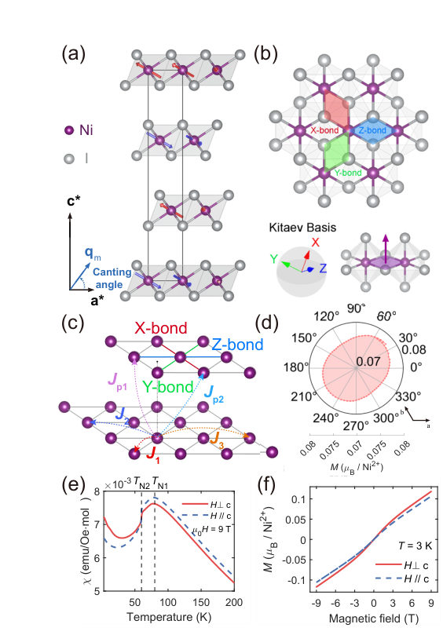
<figcaption class="paper-figure-caption"><b>Fig 1.</b> FIG. 1. Magnetic structure, Kitaev geometry, and mag- netization of single-crystalline NiI2. (a) Schematic magnetic structure with propagation vector qm and canting angle θ. (b) Kitaev geometry in a single layer and the Kitaev basis. The normal of a representative Ni-I-Ni bond plane (rhombus) defines the type of the bond. (c) Exchange paths and corre- sponding X, Y , and Z bonds. (d) Angle-dependent magneti- zation M at T = 2 K under a 6 T field rotated in the a-b plane. (e) Magnetic susceptibility χ(T) measured under µ0H = 9 T applied parallel (dashed) and perpendicular (solid) to c; ver- tical lines mark TN1 ≈80 K and TN2 = 60 K. (f) Field depen- dence of M up to 9 T with µ0H ∥(dashed)...</figcaption>
</figure>
<figure class="paper-figure-card">
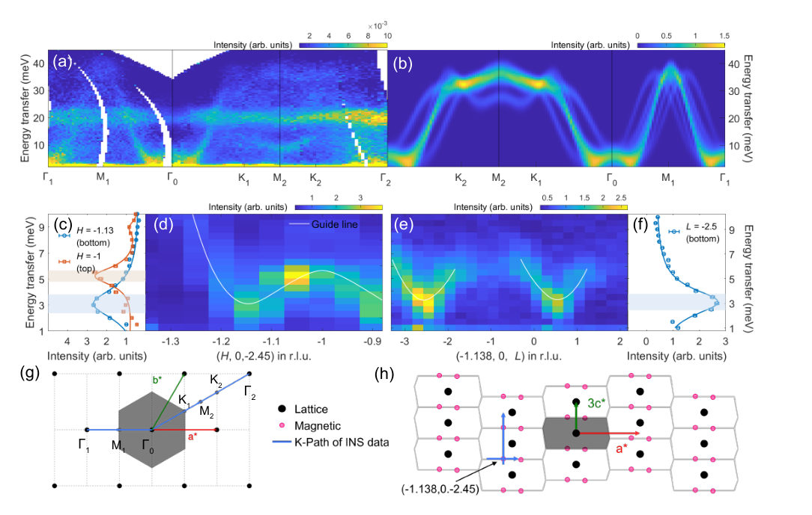
<figcaption class="paper-figure-caption"><b>Fig 2.</b> FIG. 2. INS data and LSWT calculations in the canted PS phase of NiI2. (a) Symmetrized INS intensity along the path shown in (g) measured at T = 5 K. Because of the weak dispersion along L as shown in (e), the data are integrated over L ∈[−1, 1]. Features near 20 meV arise from phonons and Al background. (b) Corresponding LSWT dispersions, averaged over six magnetic domains and integrated over L ∈[−1, 1]. (c) Const-Q cut at H = −1.13 showing a 3.1 meV gap and a kink at 5.2 meV. (d),(e) Low-energy dispersions near (−1.138, 0, −2.45) along H and L at T = 1.7 K. White lines are guides to the eye. (f) Const-Q cut at L = −2.5 confirming the 3.1 meV gap. Error bars denote √</figcaption>
</figure>
<figure class="paper-figure-card">
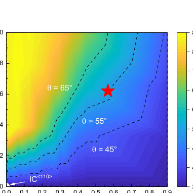
<figcaption class="paper-figure-caption"><b>Fig 3.</b> FIG. 3. Phase diagram of Eq. 1. Parameters are fixed to J1 = −1, J2 = 0.086, J3 = 0.33, and Jp2 = 0.14. The IC⟨110⟩</figcaption>
</figure>
<figure class="paper-figure-card">
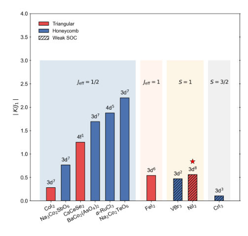
<figcaption class="paper-figure-caption"><b>Fig 4.</b> FIG. 4. List of experimentlly identified Kitaev materials.The y axis shows |K/J1|. Red (blue) bars denote triangular (hon- eycomb) lattices. Hatched bars indicate weak magnetic-ion SOC. Refs. [9, 18, 51–56]</figcaption>
</figure>
</div>

<p><strong>Summary.</strong> This work experimentally confirms the presence of sizable bond-dependent Kitaev interactions in NiI2, a triangular antiferromagnet. By combining neutron scattering and magnetization data with advanced spin-wave theory, the authors establish that these crucial interactions are mediated by the ligand ions' strong SOC rather than the magnetic metal ion itself. This discovery significantly expands the predicted material landscape for realizing quantum spin liquid physics.</p>
<p><strong>Why it may be interesting.</strong> The finding that ligand SOC can mediate Kitaev physics provides a new theoretical pathway for designing quantum magnets, which is highly relevant for understanding emergent quantum phenomena in condensed matter systems.</p>
<details>
<summary>Detailed structure</summary>
<p><strong>Main problem.</strong> The study investigates how bond-dependent anisotropic interactions, such as Kitaev terms, can be realized in magnetic materials where the primary magnetic ions have weak spin-orbit coupling.</p>
<p><strong>Main result.</strong> The authors provide compelling experimental evidence for a ligand-driven Kitaev mechanism in NiI2, showing that strong SOC on the non-magnetic ligand ions can induce significant bond anisotropy. This broadens the scope of potential Kitaev materials beyond those with intrinsically strong SOC on the magnetic ion.</p>
<p><strong>Method.</strong> A combination of inelastic neutron scattering (INS), magnetization measurements, and first-principles calculations are used to constrain an effective spin Hamiltonian analyzed via linear spin-wave theory (LSWT).</p>
<p><strong>Model / system.</strong> The system is NiI2, a van der Waals magnet with S=1 spins arranged on a triangular lattice. The model incorporates Heisenberg exchange ($J$), Kitaev ($K$), and off-diagonal ($\Gamma$) interactions.</p>
<p><strong>Key observables.</strong> Inelastic neutron scattering (INS) magnon dispersion curves (showing gaps and kinks), magnetic transition temperatures, and the canting angle of the magnetic ground state.</p>
<p><strong>Important parameters / regimes.</strong> Optimal fitted parameters include $J_1 \approx -5.86$ meV, $K \approx 3.33$ meV, $\Gamma \approx 0.37$ meV, and a resulting canting angle near $53^\circ$.</p>
<p><strong>Assumptions / limitations.</strong> The analysis assumes that conventional Heisenberg interactions alone are insufficient to explain the observed magnetic anisotropy and ground state.</p>
<p><strong>Figures summary.</strong> Figures illustrate the schematic magnetic structure, Kitaev geometry, magnetization data ($\chi(T)$ vs $H$), and the calculated/measured magnon dispersion curves showing characteristic gaps and kinks.</p>
<p><strong>Paper structure.</strong> The paper proceeds by analyzing multiple experimental observables (magnetization, INS) to constrain an effective spin Hamiltonian. LSWT is then used to fit the resulting parameters ($J_1, K, \Gamma$, etc.) against the measured spectral features, confirming the necessity of ligand-driven anisotropic terms.</p>
</details>
<details>
<summary>Abstract</summary>
<p>The bond-dependent anisotropic Kitaev interactions are the key for the Kitaev model, which has attracted intense interest for its potential to host quantum-spin-liquid states and fractional excitations. However, experimental realizations of such interactions remain scarce. Here, we investigate the magnetic excitations of NiI$_2$, a van der Waals magnet with spin $S=1$. By combining inelastic neutron scattering, magnetization measurements, magnetic structure analysis, first-principles calculations, and linear-spin-wave simulations, we identify a minimal model that features substantial Kitaev and off-diagonal $Γ$ interactions, which together stabilize the canted magnetic ground state and open a gap in the spin-wave spectrum. Notably, these interactions arise from strong spin-orbit coupling on the ligand ions, despite the quenched orbital moment of the magnetic Ni$^{2+}$ ions. Our results provide compelling experimental evidence for the ligand-driven Kitaev mechanism. This demonstrates a concrete pathway to generating strong bond-dependent anisotropy in systems where the magnetic ions themselves have weak spin-orbit coupling, thereby substantially broadening the range of potential Kitaev materials.</p>
</details>
<p><sub><a href="#top">↑ back to top</a></sub></p>

<p><a id="paper-2607.14592"></a></p>
<h3 id="adaptive-entanglement-management-in-quantum-multi-core-architectures"><a href="http://arxiv.org/abs/2607.14592v1">Adaptive Entanglement Management in Quantum Multi-Core Architectures</a></h3>
<p><strong>Authors:</strong> Rajeswari Suance P S, Anubhab Dutta, Ruchika Gupta, John Jose<br>
<strong>Type:</strong> theory · <strong>Category:</strong> quantum information and computing · <strong>PDF:</strong> <a href="https://arxiv.org/pdf/2607.14592v1">https://arxiv.org/pdf/2607.14592v1</a><br>
<strong>Analysis basis:</strong> full PDF text, analyzed in chunks
<strong>Topic relevance:</strong> <code>entanglement &amp; information structure</code> <strong>3/5</strong> · <code>correlated / nonlocal dissipation</code> <strong>1/5</strong> · <code>methods for driven-dissipative</code> <strong>1/5</strong> · <code>non-equilibrium dynamics</code> <strong>1/5</strong></p>
<div class="figure-strip-hint">↔ Scroll figures horizontally</div>
<div class="paper-figures-scroll">
<figure class="paper-figure-card">
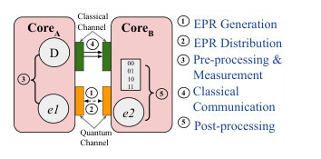
<figcaption class="paper-figure-caption"><b>Fig 1.</b> Fig. 1. Quantum Teleportation with steps</figcaption>
</figure>
<figure class="paper-figure-card">
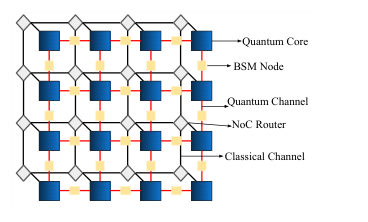
<figcaption class="paper-figure-caption"><b>Fig 2.</b> Fig. 2. Multi-Core Quantum System with Distributed Entanglement Generation [7]</figcaption>
</figure>
<figure class="paper-figure-card">
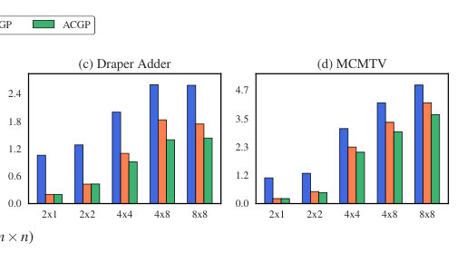
<figcaption class="paper-figure-caption"><b>Fig 3.</b> Fig. 3. Comparison of average teleportation latency for proposed protocols across different mesh topologies</figcaption>
</figure>
<figure class="paper-figure-card">
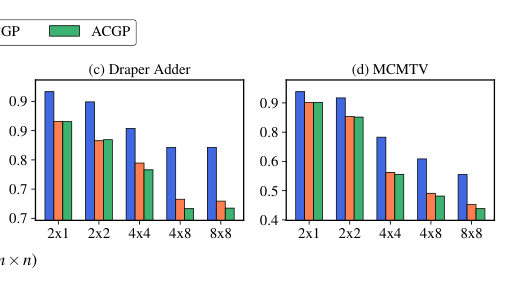
<figcaption class="paper-figure-caption"><b>Fig 4.</b> Fig. 4. Comparison of entanglement fidelity for proposed protocols across different mesh topologies</figcaption>
</figure>
<figure class="paper-figure-card">
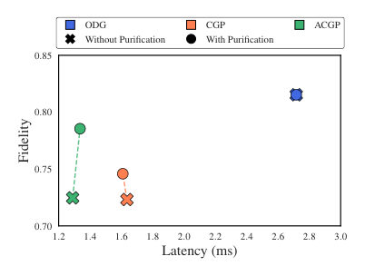
<figcaption class="paper-figure-caption"><b>Fig 5.</b> Fig. 5. Latency–fidelity trade-off achieved through purification</figcaption>
</figure>
</div>

<p><strong>Summary.</strong> This paper analyzes entanglement management strategies for multi-core quantum processors communicating via a Quantum Network-on-Chip. It compares reactive, proactive, and an adaptive approach (ACGP) for generating necessary entangled pairs. The results show that ACGP significantly minimizes communication latency while maintaining high fidelity through background purification.</p>
<p><strong>Why it may be interesting.</strong> The focus on optimizing communication overhead through adaptive resource scheduling is highly relevant to scaling quantum computation architectures and managing decoherence effects in large-scale quantum networks.</p>
<details>
<summary>Detailed structure</summary>
<p><strong>Main problem.</strong> Efficient entanglement generation is critical for performance in multi-core quantum processors because inter-core communication relies on entanglement-assisted quantum teleportation.</p>
<p><strong>Main result.</strong> The proposed Adaptive Continuous Pre-Generation (ACGP) strategy significantly reduces average teleportation latency compared to reactive or uniformly proactive methods. Furthermore, entanglement purification can restore fidelity lost during pre-generation with minimal performance penalty.</p>
<p><strong>Method.</strong> A comparative study evaluating three entanglement management paradigms—On-Demand Generation (ODG), Continuous Pre-Generation (CGP), and ACGP—using simulation on mesh-based architectures.</p>
<p><strong>Model / system.</strong> The system models multi-core quantum processors interconnected via a Quantum Network-on-Chip (NoC). Inter-core communication is simulated using entanglement-assisted quantum teleportation across various mesh topologies ($2	imes1$ to $8	imes8$).</p>
<p><strong>Key observables.</strong> Average teleportation latency (ms) and Entanglement Fidelity.</p>
<p><strong>Important parameters / regimes.</strong> Mesh size ($m 	imes n$), coherence time, and the degree of adaptation in entanglement generation probability.</p>
<p><strong>Assumptions / limitations.</strong> The model assumes all-to-all qubit connectivity within each core for simplification; pre-generation introduces fidelity degradation due to storage time.</p>
<p><strong>Figures summary.</strong> Figures compare average teleportation latency across ODG, CGP, and ACGP for various topologies (Fig. 3), and show entanglement fidelity comparisons (Fig. 4).</p>
<p><strong>Paper structure.</strong> The paper establishes the need for multi-core quantum systems $
ightarrow$ identifies entanglement generation as the bottleneck $
ightarrow$ compares three management protocols (ODG, CGP, ACGP) using simulation on benchmark circuits $
ightarrow$ demonstrates ACGP's superior performance in latency while addressing fidelity loss via purification.</p>
</details>
<details>
<summary>Abstract</summary>
<p>Scalable quantum computing architectures increasingly rely on multi-core designs, where qubits are distributed across multiple processing cores interconnected through a quantum Network-on-Chip (NoC). In such systems, inter-core communication is typically realized through entanglement-assisted quantum teleportation, making efficient entanglement generation critical for performance. In this paper, we perform a comparative study of three entanglement management paradigms for multi-core quantum processors: reactive on-demand generation (ODG), proactive continuous pre-generation (CGP), and an adaptive continuous pre-generation approach (ACGP). While ODG generates entanglement only when required, CGP reduces average teleportation latency by pre-generating EPR pairs in the background. To improve upon this, we propose ACGP which dynamically adjusts entanglement generation probabilities based on observed inter-core communication patterns. We evaluate these approaches using an extended SeQUeNCe simulator on mesh-based multi-core architectures on real benchmark circuits. Results show that ACGP significantly reduces average teleportation latency compared to ODG and CGP. Although pre-generation introduces fidelity degradation due to storage time, entanglement purification effectively restores fidelity with minimal impact on latency. These results demonstrate that adaptive entanglement managements can substantially improve communication efficiency in scalable quantum multi-core systems.</p>
</details>
<p><sub><a href="#top">↑ back to top</a></sub></p>

<p><a id="paper-2607.15262"></a></p>
<h3 id="dynamic-entanglement-distribution-for-multi-user-and-multi-protocol-quantum-networking"><a href="http://arxiv.org/abs/2607.15262v1">Dynamic Entanglement Distribution for Multi-User and Multi-Protocol Quantum Networking</a></h3>
<p><strong>Authors:</strong> Rui Wang, Marcus J. Clark, Obada Alia, Sima Bahrani, Djeylan Aktas, Matej Peranić, Mario Stipčević, Martin Lončarić, John Rarity, Siddarth K. Joshi, Dimitra Simeonidou<br>
<strong>Type:</strong> both · <strong>Category:</strong> quantum information and computing · <strong>PDF:</strong> <a href="https://arxiv.org/pdf/2607.15262v1">https://arxiv.org/pdf/2607.15262v1</a><br>
<strong>Analysis basis:</strong> full PDF text, analyzed in chunks
<strong>Topic relevance:</strong> <code>quantum optics experiment</code> <strong>3/5</strong> · <code>QC/QI experiment</code> <strong>1/5</strong> · <code>entanglement &amp; information structure</code> <strong>1/5</strong> · <code>interference shaping light</code> <strong>1/5</strong></p>
<div class="figure-strip-hint">↔ Scroll figures horizontally</div>
<div class="paper-figures-scroll">
<figure class="paper-figure-card">
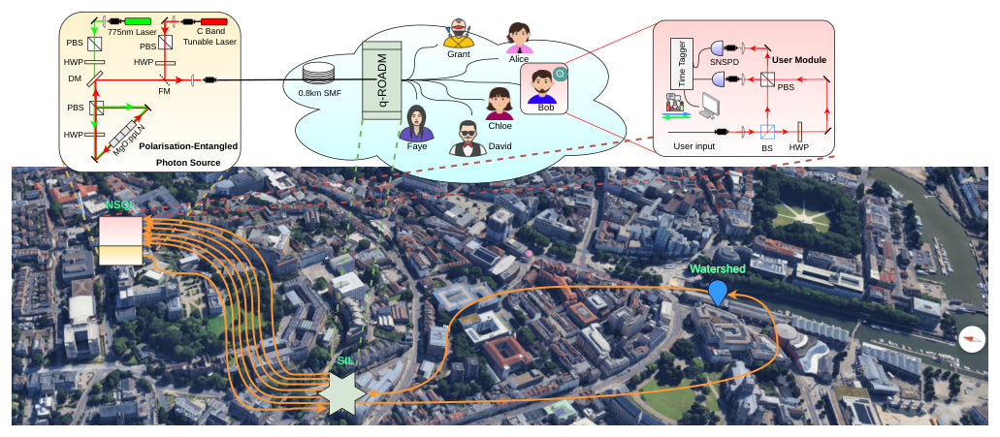
<figcaption class="paper-figure-caption"><b>Fig 1.</b> Figure 1: A 6-user entanglement-based quantum communication network architecture enabled by a q-ROADM. A type-0 SPDC broadband polarisation entangled photon source is connected to a q-ROADM via 0.8 km campus fibre between SIL and NSQI, supporting scalable, dynamic entanglement distribution. The 6 user modules are also deployed at NSQI connecting to the q-ROADM via the loop-back of another 0.8 km campus link for user A, B,C,F,G, and Bristol metropolitan fibre looping back from Watershed (user D). At each user, there is a polarisation analysis module, two SNSPDs, a time tagger and a computer to exchange the classical information with other users.</figcaption>
</figure>
<figure class="paper-figure-card">
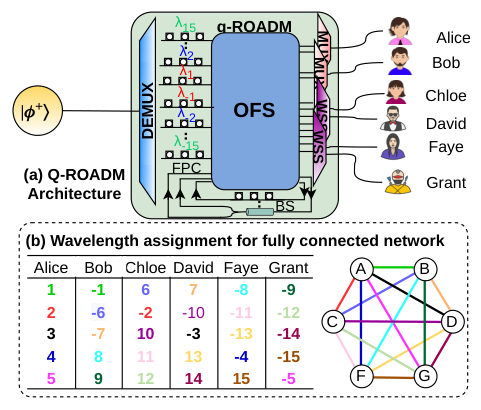
<figcaption class="paper-figure-caption"><b>Fig 2.</b> Figure 2: (a) q-ROADM architecture for dynamic entan- glement distribution to multiple users. (B) Wavelength assignment for the six-user full-mesh configuration, where each table entry denotes the channel λi assigned to the corresponding link.</figcaption>
</figure>
<figure class="paper-figure-card">
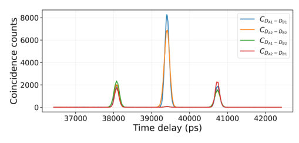
<figcaption class="paper-figure-caption"><b>Fig 3.</b> Figure 3: Temporal correlation histogram between Alice and Bob when the network is configured to support only the A–B link, with 10-minute integration time and bin- width of 10 ps.</figcaption>
</figure>
<figure class="paper-figure-card">
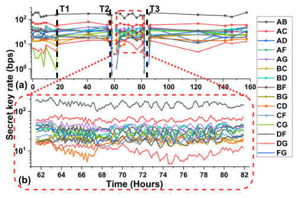
<figcaption class="paper-figure-caption"><b>Fig 4.</b> Figure 4: SKR of all 15 links in the six-user full-mesh quantum network. (a) SKR over ≈7 days; (b) zoomed-in SKR over ≈20 hours.</figcaption>
</figure>
<figure class="paper-figure-card">
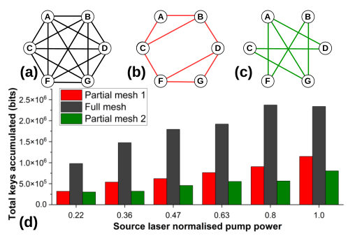
<figcaption class="paper-figure-caption"><b>Fig 5.</b> Figure 5: Comparison between full-mesh and time-shared partial-mesh configurations under different normalised source pump powers. (a) Six-user full-mesh topology. (b,c) Two complementary partial-mesh topologies. (d) Total accumulated secret keys over 40 minutes for the full-mesh configuration, compared with two 20-minute partial-mesh configurations under the favourable network operating condition.</figcaption>
</figure>
</div>

<p><strong>Summary.</strong> The paper presents an experimental demonstration of a metropolitan-scale quantum network using a q-ROADM to dynamically distribute entanglement among multiple users. It proves the feasibility of flexible, service-oriented networking by supporting full-mesh topologies and complex multi-protocol tasks like secure user onboarding (SIAT). This work advances the practical realization of scalable quantum internet infrastructure over existing optical fiber.</p>
<p><strong>Why it may be interesting.</strong> This work directly addresses the physical implementation challenges of quantum networking by proposing a reconfigurable hardware solution (q-ROADM), which is highly relevant for researchers working on photonic quantum information infrastructure and network protocols.</p>
<details>
<summary>Detailed structure</summary>
<p><strong>Main problem.</strong> The core challenge addressed is achieving scalable, dynamic entanglement distribution necessary for multi-user and multi-protocol quantum networks.</p>
<p><strong>Main result.</strong> A quantum reconfigurable optical add-drop multiplexer (q-ROADM) architecture was demonstrated to enable stable, service-oriented entanglement distribution over metropolitan fiber, supporting full-mesh connectivity and complex protocols like SIAT.</p>
<p><strong>Method.</strong> The authors combine hardware demonstration using a q-ROADM with theoretical analysis of key rates and time complexity for establishing authenticated links.</p>
<p><strong>Model / system.</strong> The system is an entanglement-based quantum communication network built upon deployed metropolitan fiber, utilizing a q-ROADM to dynamically allocate polarization-entangled photon pairs from a broadband source to multiple users (up to six).</p>
<p><strong>Key observables.</strong> Secret Key Rate (SKR), Quantum Bit Error Rate (QBER), and total time required for establishing authenticated links (SIAT time).</p>
<p><strong>Important parameters / regimes.</strong> Source heralding efficiency ($\approx 15\%$ favourable, $\approx 3\%$ challenging), detector jitter ($< 100 	ext{ ps}$ favourable), and security parameters ($\epsilon_c$).</p>
<p><strong>Assumptions / limitations.</strong> The analysis assumes that the full link-dependent ratio for authentication can be approximated by the time-tagging contribution, and performance is compared between ideal (favourable) and realistic (challenging) operating conditions.</p>
<p><strong>Figures summary.</strong> Figures illustrate the 6-user network architecture using q-ROADM components. Key plots show the stable SKR of all links over $>150$ hours in full-mesh mode, and time analyses compare total SIAT time for different security levels ($\epsilon_c$) and operational conditions.</p>
<p><strong>Paper structure.</strong> The paper first establishes the need for dynamic distribution using a q-ROADM. It then details experimental demonstrations of stable multi-user connectivity (full/partial mesh) and compares key generation rates. Finally, it analyzes the time complexity required to establish secure links using the SIAT protocol across varying link conditions.</p>
</details>
<details>
<summary>Abstract</summary>
<p>Dynamic entanglement distribution is a key requirement for scalable, multi-user and multi-protocol quantum networks. We demonstrate a metropolitan-scale entanglement-based quantum communication network enabled by a quantum reconfigurable optical add-drop multiplexer (q-ROADM), which dynamically distributes polarisation-entangled photon pairs from a broadband source to six users over deployed campus and metropolitan fibre. The network supports programmable full-mesh, partial-mesh and sliced sub-network configurations, enabling flexible allocation of entanglement resources according to link condition and service requirement. We demonstrate stable six-user full-mesh operation over more than 150 hours, compare full-mesh and time-shared partial-mesh strategies under different source and detector conditions, and realise quantum network slicing with optional/additional interconnection links. We also show that the same infrastructure can support different quantum protocols by showcasing Secure Inaugural Authentication-Transfer (SIAT) combined with Network flooding over multiple paths to improve the security of onboarding a new user. These results demonstrate a q-ROADM-enabled entanglement distribution architecture as a novel route towards reconfigurable, service-oriented quantum networking over optical fibre infrastructure.</p>
</details>
<p><sub><a href="#top">↑ back to top</a></sub></p>

<p><a id="paper-2607.15030"></a></p>
<h3 id="implicit-differentiation-of-tensor-network-algorithms"><a href="http://arxiv.org/abs/2607.15030v1">Implicit differentiation of tensor network algorithms</a></h3>
<p><strong>Authors:</strong> Lander Burgelman, Anna Francuz, Paul Brehmer, Lukas Devos, Jutho Haegeman, Frank Verstraete, Bram Vanhecke<br>
<strong>Type:</strong> theory · <strong>Category:</strong> numerical methods · <strong>PDF:</strong> <a href="https://arxiv.org/pdf/2607.15030v1">https://arxiv.org/pdf/2607.15030v1</a><br>
<strong>Analysis basis:</strong> full PDF text, analyzed in chunks
<strong>Topic relevance:</strong> <code>methods for driven-dissipative</code> <strong>3/5</strong> · <code>analog quantum simulation</code> <strong>2/5</strong> · <code>Keldysh / 2PI / non-Gaussian methods</code> <strong>1/5</strong></p>
<div class="figure-strip-hint">↔ Scroll figures horizontally</div>
<div class="paper-figures-scroll">
<figure class="paper-figure-card">
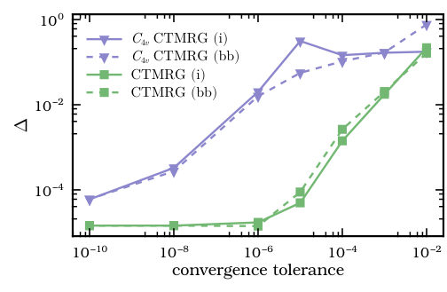
<figcaption class="paper-figure-caption"><b>Fig 1.</b> FIG. 1. Relative distance ∆of the directional derivative of the PEPS energy density Eq. (6) computed with implicit differ- entiation (i) and with black-box reverse-mode differentiation (bb) as in Eq. (A6), to the value obtained using a symmet- ric first-order finite difference scheme with step size ε = 10−3. The differences were averaged over three random PEPS points and directions with D = 3 and χ = 20, and are shown as a function of the convergence tolerance of the contraction algo- rithm.</figcaption>
</figure>
<figure class="paper-figure-card">
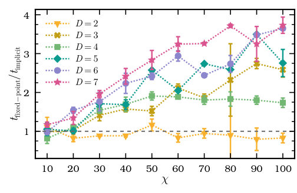
<figcaption class="paper-figure-caption"><b>Fig 2.</b> FIG. 2. Speedup tfixed-point/timplicit of the implicit differ- entiation approach over fixed-point differentiation, obtained from timing the gradient linear problem convergence for C4v- invariant CTMRG on the Heisenberg model of Eq. (89).</figcaption>
</figure>
<figure class="paper-figure-card">
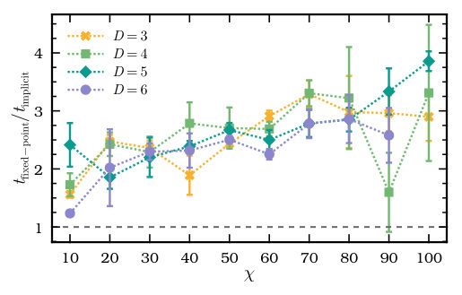
<figcaption class="paper-figure-caption"><b>Fig 3.</b> FIG. 4. Speedup tfixed-point/timplicit of the implicit over the fixed-point gradient linear problem, for boundary MPS with- out spatial symmetries on the sublattice-rotated Heisenberg model.</figcaption>
</figure>
<figure class="paper-figure-card">
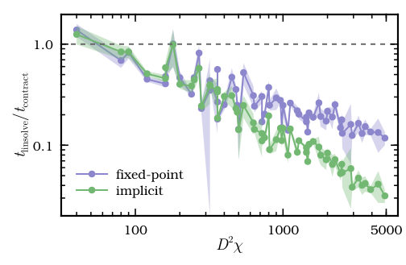
<figcaption class="paper-figure-caption"><b>Fig 4.</b> FIG. 3. Gradient linear problem convergence times tlinsolve, normalized by the C4v-invariant CTMRG contraction time tcontract, for both the implicit and fixed-point differentia- tion approaches on the Heisenberg model. We plot the data as a function of the matrix dimension of the D2χ × D2χ- dimensional enlarged corner from Eq. (22) on a log-log scale.</figcaption>
</figure>
<figure class="paper-figure-card">
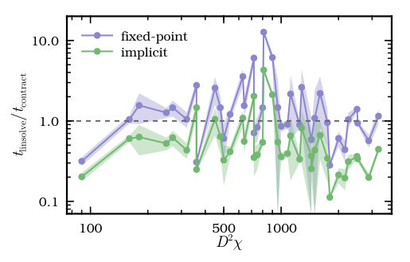
<figcaption class="paper-figure-caption"><b>Fig 5.</b> FIG. 5. Times for solving the gradient linear problem, nor- malized by the boundary MPS contraction time, for both the fixed-point and implicit gradient on the Heisenberg model. The data is shown on a log-log scale as a function of the com- bined dimension D2χ as before.</figcaption>
</figure>
</div>

<p><strong>Summary.</strong> This paper tackles the numerical instability and high cost associated with calculating gradients during PEPS optimization. By employing implicit differentiation techniques on the underlying contraction environment, the authors create a more stable and computationally efficient method for gradient computation. This advancement significantly simplifies implementing advanced variational quantum algorithms for many-body physics.</p>
<p><strong>Why it may be interesting.</strong> This work provides a powerful mathematical tool (implicit differentiation) that directly addresses computational bottlenecks in simulating complex quantum many-body systems using tensor networks, which is crucial for modern condensed matter theory.</p>
<details>
<summary>Detailed structure</summary>
<p><strong>Main problem.</strong> The primary challenge is efficiently and stably calculating the energy gradient for variational optimization of Projected Entangled-Pair States (PEPS).</p>
<p><strong>Main result.</strong> The authors propose using implicit differentiation techniques, reformulating the gradient calculation via a characteristic equation to reduce computational cost and eliminate numerical instabilities.</p>
<p><strong>Method.</strong> They replace direct automatic differentiation through complex contraction subroutines with an algebraic approach based on solving a single characteristic equation derived from the environment contraction.</p>
<p><strong>Model / system.</strong> The work focuses on variational optimization of PEPS, which is used to approximate ground states for quantum many-body systems on lattices like the infinite square lattice.</p>
<p><strong>Key observables.</strong> The energy gradient $\partial E/\partial p$, which dictates the optimization path.</p>
<p><strong>Important parameters / regimes.</strong> The local variational degrees of freedom ($p$) and the environment variables ($x$) defining the PEPS ansatz.</p>
<p><strong>Assumptions / limitations.</strong> The method assumes that the core contraction step can be accurately characterized by a single algebraic equation $F(y, p) = 0$.</p>
<p><strong>Figures summary.</strong> Not specified in detail; notes focus on mathematical equations and index structures for tensor contractions (e.g., Equations F2-F8).</p>
<p><strong>Paper structure.</strong> The paper progresses from identifying the bottleneck of AD in PEPS optimization to introducing implicit differentiation theory, applying it by reformulating the gradient calculation around a characteristic equation, and finally demonstrating its practical simplification.</p>
</details>
<details>
<summary>Abstract</summary>
<p>The current leading approach to the variational optimization of projected entangled-pair states (PEPS) is based on automatic differentiation, which allows for a convenient evaluation of the energy gradient with respect to the local variational degrees of freedom. However, evaluating the energy gradient not only remains a major computational bottleneck of the optimization procedure, but also suffers from frequent numerical instabilities. In this work, we adopt recent advances in implicit differentiation techniques to address these challenges in PEPS optimization. By reformulating the core step of the gradient computation in terms of a single characteristic equation for the contraction environment, we reduce the cost of the gradient computation and improve its scaling with the problem size. By choosing a suitable parametrization of this characteristic equation based on the intrinsic symmetries of the contraction environment, we can directly remove instabilities from the global gradient computation that would otherwise arise from the derivatives of subroutines of the contraction algorithm. Finally, we demonstrate how this approach drastically simplifies the practical implementation of stable gradient-based PEPS optimization.</p>
</details>
<p><sub><a href="#top">↑ back to top</a></sub></p>

<p><a id="paper-2607.15112"></a></p>
<h3 id="spin-hall-effect-in-collinear-ferromagnets-from-spin-group-symmetry"><a href="http://arxiv.org/abs/2607.15112v1">Spin Hall Effect in Collinear Ferromagnets from Spin-Group Symmetry</a></h3>
<p><strong>Authors:</strong> Qing Zhang, Yizhuo Song, Jiahao Shentu, Jianting Dong, Jia Zhang<br>
<strong>Type:</strong> theory · <strong>Category:</strong> strongly correlated electrons · <strong>PDF:</strong> <a href="https://arxiv.org/pdf/2607.15112v1">https://arxiv.org/pdf/2607.15112v1</a><br>
<strong>Analysis basis:</strong> full PDF text, analyzed in chunks
<strong>Topic relevance:</strong> <code>spintronics-quantum-optics interface</code> <strong>3/5</strong> · <code>Keldysh / 2PI / non-Gaussian methods</code> <strong>1/5</strong> · <code>analog quantum simulation</code> <strong>1/5</strong> · <code>non-equilibrium dynamics</code> <strong>1/5</strong></p>
<div class="figure-strip-hint">↔ Scroll figures horizontally</div>
<div class="paper-figures-scroll">
<figure class="paper-figure-card">
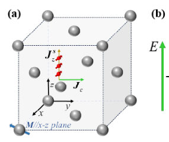
<figcaption class="paper-figure-caption"><b>Fig 1.</b> Fig. 1. (a) Generation of a spin Hall current propagating along the z direction by applying an</figcaption>
</figure>
<figure class="paper-figure-card">
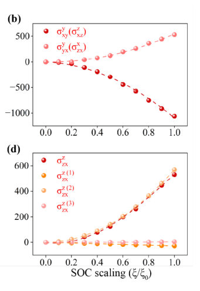
<figcaption class="paper-figure-caption"><b>Fig 2.</b> Fig. 2. (a) T-even and (b) T-odd SHCs as a function of the SOC scaling factor ξ/ξ0 for fcc</figcaption>
</figure>
<figure class="paper-figure-card">
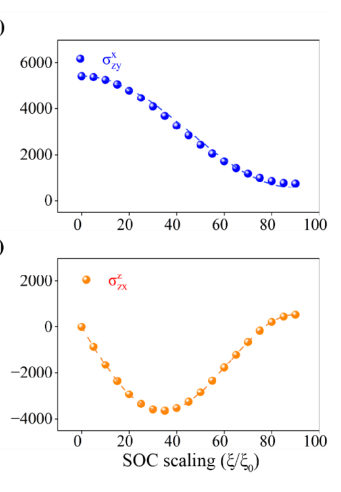
<figcaption class="paper-figure-caption"><b>Fig 3.</b> Fig. 3. SHCs of Ni0.8Fe0.2 as a function of the angle θ between the magnetic moment m and the</figcaption>
</figure>
</div>

<p><strong>Summary.</strong> This work develops a comprehensive symmetry-based theory to uncover the microscopic origins of the Spin Hall Effect in ferromagnets. By treating spin-orbit coupling as a perturbation, the authors systematically derive distinct T-even and T-odd contributions to the spin Hall conductivity. The findings clarify how magnetic order dictates the magnitude and nature of these spin current sources for spintronic applications.</p>
<p><strong>Why it may be interesting.</strong> While focused on condensed matter magnetism, the rigorous use of symmetry group theory to decompose transport coefficients based on fundamental interactions (like SOC) provides a powerful theoretical template applicable across many areas of quantum physics.</p>
<details>
<summary>Detailed structure</summary>
<p><strong>Main problem.</strong> The paper aims to elucidate the microscopic origins of the Spin Hall Effect (SHE) in collinear ferromagnets, specifically detailing how magnetic order activates distinct spin Hall responses.</p>
<p><strong>Main result.</strong> It identifies multiple SHE mechanisms—including magnetization-independent and dependent T-even contributions, and a leading T-odd Magnetic Spin Hall Effect (MSHE)—whose origins are determined by the order of SOC perturbation.</p>
<p><strong>Method.</strong> The study employs symmetry analysis based on magnetic point-group symmetries and treats Spin-Orbit Coupling (SOC) as a systematic perturbation to expand the Spin Hall Conductivity (SHC).</p>
<p><strong>Model / system.</strong> The focus is on collinear ferromagnets, where SOC breaks spin-group symmetry. The theory is validated using first-principles calculations on materials like fcc ferromagnets.</p>
<p><strong>Key observables.</strong> Spin Hall Conductivity ($\sigma_{ij}^k$), decomposed into Time-Reversal-Even (T-even) and Time-Reversal-Odd (T-odd) components, including the MSHE and Planar Spin Hall Effect (PSHE).</p>
<p><strong>Important parameters / regimes.</strong> The strength of SOC ($\xi$) is treated as a small parameter for perturbation expansion; magnetization direction ($\mathbf{m}$) dependence is crucial.</p>
<p><strong>Assumptions / limitations.</strong> The analysis assumes collinear ferromagnetism and develops the theory by treating SOC perturbatively up to second order in the expansion.</p>
<p><strong>Figures summary.</strong> Figures illustrate spin current generation using an electric field, schematic interactions with magnetization $\mathbf{m}$, and show the calculated dependence of SHCs on SOC scaling factors and magnetization angle ($    heta$).</p>
<p><strong>Paper structure.</strong> The paper develops a theoretical framework by applying symmetry constraints to expand the SHC in powers of SOC. It systematically identifies contributions at first order (T-even/T-odd) and second order (PSHE), validating these findings with first-principles calculations.</p>
</details>
<details>
<summary>Abstract</summary>
<p>Magnetic materials support both time-reversal-even (T-even) and time-reversal-odd (T-odd) spin Hall currents, yet their underlying microscopic origins remain elusive. Here, we elucidate the spin Hall effect (SHE) in collinear ferromagnets by treating spin-orbit coupling (SOC) as a perturbation that breaks spin-group symmetry, thereby revealing how magnetic order activates distinct spin Hall response. To first order in SOC, we identify two dominant T-even SHE mechanisms: a magnetization-independent conventional contribution and a magnetization-dependent channel associated with anomalous Hall charge transport. At the same order, the leading T-odd magnetic spin Hall effect (MSHE) originates from the exchange interaction between the conventional spin current and the local magnetization. At second order in SOC, we further uncover a distinct T-odd planar spin Hall mechanism. Our spin-symmetry analysis is corroborated by first-principles calculations, which reveal a pronounced anisotropic magnetic spin Hall effect whose magnitude can be comparable to the T-even spin Hall conductivity (SHC) when the magnetic moment is tilted away from the principal crystallographic axes. These findings clarify the microscopic origins of the SHC in collinear ferromagnets and pave the way for ferromagnet-based spin current sources with versatile properties in spintronic applications.</p>
</details>
<p><sub><a href="#top">↑ back to top</a></sub></p>

<p><a id="paper-2607.14704"></a></p>
<h3 id="high-rate-continuous-variable-quantum-key-distribution-coexisting-with-tbs-coherent-classical-transmission-in-hollow-core-fiber"><a href="http://arxiv.org/abs/2607.14704v1">High-rate continuous-variable quantum key distribution coexisting with Tb/s coherent classical transmission in hollow-core fiber</a></h3>
<p><strong>Authors:</strong> Xitao Ji, Siyu Chen, Peng Li, Mingming Zhang, Yilun Chen, Jun Gao, Rui Lin, Bacco Davide, Siqi Yan, Ming Tang<br>
<strong>Type:</strong> experiment · <strong>Category:</strong> quantum information and computing · <strong>PDF:</strong> <a href="https://arxiv.org/pdf/2607.14704v1">https://arxiv.org/pdf/2607.14704v1</a><br>
<strong>Analysis basis:</strong> full PDF text, analyzed in chunks
<strong>Topic relevance:</strong> <code>quantum optics experiment</code> <strong>3/5</strong> · <code>QC/QI experiment</code> <strong>1/5</strong> · <code>interference shaping light</code> <strong>1/5</strong></p>
<div class="figure-strip-hint">↔ Scroll figures horizontally</div>
<div class="paper-figures-scroll">
<figure class="paper-figure-card">
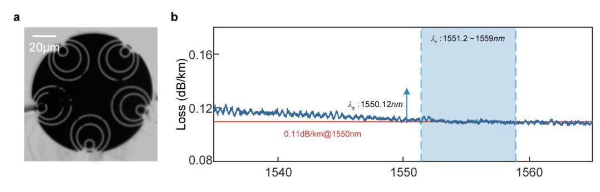
<figcaption class="paper-figure-caption"><b>Fig 1.</b> Fig. 1 | Structural and transmission characteristics of the hollow-core link. (a) Optical micrograph of the AR-HCF cross-section. (b) Measured attenuation spectrum of the 24.3-km HCF link.</figcaption>
</figure>
<figure class="paper-figure-card">
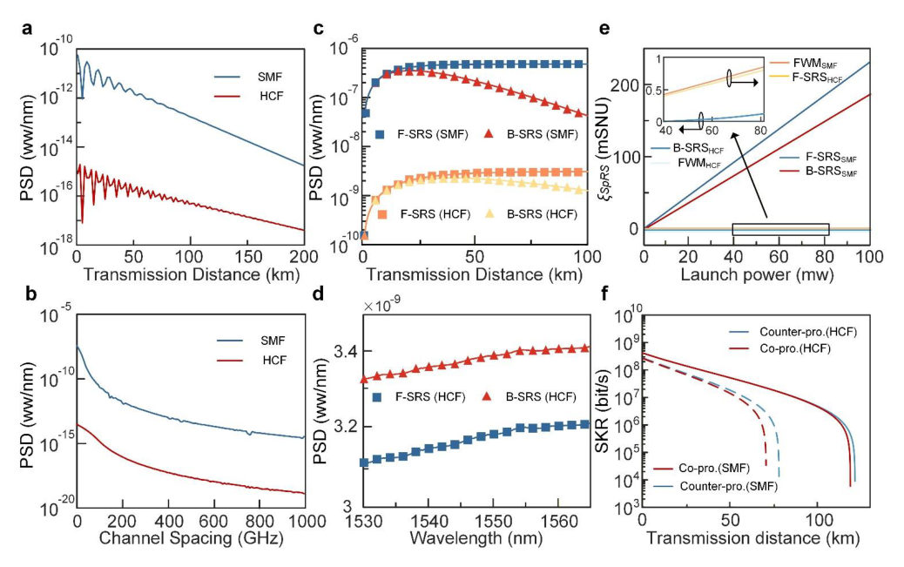
<figcaption class="paper-figure-caption"><b>Fig 2.</b> Fig. 2 | Measurement and analysis of spontaneous Raman-scattering (SpRS) noise and SKR. (a) FWM noise PSD versus transmission distance in SMF and HCF. (b) F-SRS and B-SRS noise PSD versus channel spacing in SMF and HCF. (c) F-SRS and B-SRS noise PSD versus transmission distance in SMF and HCF. (d) SpRS noise PSD in HCF versus quantum signal wavelength under a fixed classical wavelength condition. (e) Excess noise induced by FWM and SpRS noise versus total classical launch power. (f) SKR versus transmission distance for SMF and HCF platforms under co-propagating (Co-pro.) and counter-propagating (Counter-pro.) configurations.</figcaption>
</figure>
<figure class="paper-figure-card">

<figcaption class="paper-figure-caption"><b>Fig 3.</b> Fig. 2 illustrates the nonlinear-noise characteristics relevant to QKD-classical coexistence in conventional</figcaption>
</figure>
<figure class="paper-figure-card">

<figcaption class="paper-figure-caption"><b>Fig 4.</b> Fig. 3 | Optimization of residual-carrier-assisted phase recovery in DM CV-QKD. (a) Transmitted optical spectra with and without the residual carrier. (b) Measured FER versus CSPR. (c) Residual-phase-noise-induced excess noise</figcaption>
</figure>
<figure class="paper-figure-card">

<figcaption class="paper-figure-caption"><b>Fig 5.</b> Fig. 4 | Experimental setup for co-propagating coherent classical transmission and DM CV-QKD over AR-HCF. (a) The classical channels are generated from an electro-optic frequency comb and modulated with dual-polarization probabilistically shaped 16-QAM. The quantum channel uses dual-polarization probabilistically shaped 16-QAM with a residual optical carrier. ECL, external-cavity laser; FL, fiber laser; EOFC, electro-optic frequency comb; DWDM, dense wavelength-division multiplexer; DP-IQ Mod, dual-polarization IQ modulator; EDFA, erbium-doped fiber amplifier; VOA, variable optical attenuator; FI, Faraday isolator; AR-HCF, anti-resonant hollow-core fiber; WS, wave shaper; ICR, integrated...</figcaption>
</figure>
</div>

<p><strong>Summary.</strong> The paper presents an experimental demonstration showing how to integrate high-rate continuous-variable QKD with Tb/s classical communication in a shared optical link. By utilizing anti-resonant hollow-core fiber, the system effectively suppresses noise accumulation that typically limits quantum transmission. This approach establishes a promising pathway for realizing secure, high-capacity quantum internet infrastructure.</p>
<p><strong>Why it may be interesting.</strong> This work is highly relevant as it pushes the boundaries of practical quantum networking by solving the critical engineering problem of integrating weak quantum signals with powerful classical channels over long distances using novel fiber platforms.</p>
<details>
<summary>Detailed structure</summary>
<p><strong>Main problem.</strong> The primary challenge addressed is enabling high-rate continuous-variable quantum key distribution (CV-QKD) to operate reliably alongside massive classical optical data streams within a shared fiber infrastructure.</p>
<p><strong>Main result.</strong> The authors demonstrated that using an anti-resonant hollow-core fiber combined with residual-carrier assistance allows for achieving simultaneous rates of 153.22 Mb/s quantum key rate and 7.2 Tb/s classical data rate over 24.3 km.</p>
<p><strong>Method.</strong> The system employs dual-polarization, high-baudrate modulation (15 Gbaud for QKD) and utilizes advanced digital signal processing (DSP) techniques at the receiver end for phase recovery and equalization.</p>
<p><strong>Model / system.</strong> The physical platform is an anti-resonant hollow-core fiber (AR-HCF), which confines light primarily in air to minimize nonlinear interactions with silica glass. The quantum channel uses CV-QKD, while the classical channel supports multiple wavelength-division multiplexed channels.</p>
<p><strong>Key observables.</strong> Secret Key Rate (SKR) ($   ext{Mb/s}$), aggregate data rate ($    ext{Tb/s}$), and sustained positive SKR under high classical launch power.</p>
<p><strong>Important parameters / regimes.</strong> 24.3 km link length, 15 Gbaud modulation, up to $15 	ext{ dBm}$ classical launch power, and projected extension to a $100	ext{-km-equivalent}$ condition.</p>
<p><strong>Assumptions / limitations.</strong> The performance relies on the physical advantage of air-core propagation to suppress noise sources like Four-Wave Mixing (FWM) and Spontaneous Raman Scattering (SpRS).</p>
<p><strong>Figures summary.</strong> Figures illustrate the AR-HCF structure and low attenuation, compare nonlinear noise spectra between SMF and HCFs, and show simulated SKR vs. distance curves demonstrating superior performance in HCF.</p>
<p><strong>Paper structure.</strong> The paper progresses by first identifying the coexistence challenge, then detailing the physical solution (AR-HCF) to mitigate noise, followed by implementing advanced signal processing techniques (DSP/equalization) for robust quantum reception, and finally quantifying the high achievable rates.</p>
</details>
<details>
<summary>Abstract</summary>
<p>Quantum key distribution (QKD) can provide secret keys with security rooted in quantum mechanics, but operation alongside high-capacity classical traffic remains limited by the excess-noise budget of weak quantum states in conventional solid-core fiber. Here, we combine ultralow-loss anti-resonant hollow-core fiber with residual-carrier-assisted discrete-modulation continuous-variable QKD (DM-CV-QKD) to address both propagation-induced coexistence noise and low-SNR phase recovery. Over a 24.3-km hollow-core link with 3.3-dB end-to-end loss, a dual-polarization 15-Gbaud DM-CV-QKD channel achieves an average asymptotic secret-key rate (SKR) of 153.22 Mb/s and a finite-size SKR of 149.99 Mb/s, while 39 coherent wavelength-division-multiplexed channels deliver an aggregate data rate of 7.6 Tb/s and a net data rate of 7.2 Tb/s. The system can even sustain a positive SKR under a high classical launch power of up to 15 dBm, without an optical bandpass filter (BPF). Finite-size analysis against collective attacks further yields a projected positive secret-key rate at a 100-km-equivalent condition. These results show that an anti-resonant hollow-core fiber, combined with carrier-assisted phase recovery, can greatly extend the operating regime of shared-fiber quantum-secured coherent links, pointing to a promising approach for integrating high-rate CV-QKD with high-capacity optical networks.</p>
</details>
<p><sub><a href="#top">↑ back to top</a></sub></p>

<p><a id="paper-2607.14376"></a></p>
<h3 id="state-independent-uncertainty-relations-on-multipartite-spin-math699math-systems"><a href="http://arxiv.org/abs/2607.14376v1">State-independent uncertainty relations on multipartite spin $1/2$-systems</a></h3>
<p><strong>Authors:</strong> Yiling Wang, Kailash Misra, Naihuan Jing<br>
<strong>Type:</strong> theory · <strong>Category:</strong> quantum information and computing · <strong>PDF:</strong> <a href="https://arxiv.org/pdf/2607.14376v1">https://arxiv.org/pdf/2607.14376v1</a><br>
<strong>Analysis basis:</strong> full PDF text, analyzed in chunks
<strong>Topic relevance:</strong> <code>entanglement &amp; information structure</code> <strong>3/5</strong> · <code>exotic spin models in light-matter</code> <strong>1/5</strong></p>
<div class="figure-strip-hint">↔ Scroll figures horizontally</div>
<div class="paper-figures-scroll">
<figure class="paper-figure-card">

<figcaption class="paper-figure-caption"><b>Fig 1.</b> Figure 2. Visualization of the tripartite system ( 1</figcaption>
</figure>
</div>

<p><strong>Summary.</strong> This paper develops a novel representation-theoretic framework to derive exact state-independent uncertainty relations for multipartite spin 1/2 systems. By analyzing the total spin variance using Clebsch–Gordan decomposition, the authors establish universal algebraic bounds up to five qubits. These results provide the first unified approach to quantifying fundamental measurement limits in large qubit ensembles.</p>
<p><strong>Why it may be interesting.</strong> This work provides fundamental algebraic tools (representation theory) to quantify limits on simultaneous measurements in multi-qubit quantum systems, which is central to understanding quantum metrology and entanglement.</p>
<details>
<summary>Detailed structure</summary>
<p><strong>Main problem.</strong> The primary goal is developing state-independent uncertainty relations (SIURs) for multipartite spin 1/2 systems, specifically focusing on variance-based formulations beyond the bipartite level.</p>
<p><strong>Main result.</strong> The authors derive exact state-independent variance bounds up to quintipartite systems, establishing a structural dichotomy where odd $n$ enforce strictly positive universal bounds while even $n$ allow for vanishing variance in certain sectors.</p>
<p><strong>Method.</strong> They employ a representation-theoretic framework utilizing Clebsch–Gordan decomposition and extremal analysis of the total spin variance ($\Delta^2(\mathfrak{su}_2)$).</p>
<p><strong>Model / system.</strong> The system is modeled as multipartite collective spin-$1/2$ systems, analyzed using operators forming representations of $\mathfrak{su}(2)$ on an $n$-qubit Hilbert space.</p>
<p><strong>Key observables.</strong> Total variance ($\Delta^2(\mathfrak{su}_2)$) and the Casimir operator expectation value are key diagnostics for bounding uncertainty.</p>
<p><strong>Important parameters / regimes.</strong> The number of qubits ($n$), which dictates the complexity of the representation decomposition, is a crucial parameter.</p>
<p><strong>Assumptions / limitations.</strong> The analysis relies on extending known techniques from one- and bi-partite systems to higher multipartite settings via algebraic structure theorems.</p>
<p><strong>Figures summary.</strong> Figure 1 illustrates the bipartite structure for $(1/2)\otimes(1/2)$, showing variance bounds related to irreducible components $V(0)$ and $V(1)$.</p>
<p><strong>Paper structure.</strong> The paper progresses by first establishing bounds for single $su_2$ systems, then analyzing direct sum representations via Clebsch–Gordan decomposition, culminating in the derivation of universal bounds up to quintipartite systems.</p>
</details>
<details>
<summary>Abstract</summary>
<p>Uncertainty relations quantify fundamental limits on simultaneous measurement of quantum observables. While conventional formulations are state-dependent, state-independent uncertainty relations (SIURs) impose universal bounds determined solely by the algebraic structure of the operators, with applications across metrology, quantum cryptography, and entanglement detection. Despite extensive study, exact analytical variance-based SIURs have so far been established primarily for one- and bi-partite systems, while entropic SIURs have been extended to multipartite and memory-assisted settings through information-theoretic constructions. In contrast, exact variance-based SIURs beyond the bipartite level have remained analytically unresolved.} Here we develop a representation-theoretic framework for multipartite SIURs in collective spin-$\tfrac{1}{2}$ systems. Using the Clebsch--Gordan decomposition and extremal analysis of total spin variance, we derive exact state-independent bounds up to quintipartite systems. A clear structural dichotomy emerges: odd $n$ systems exhibit strictly positive universal bounds (e.g., $Δ^2(\mathfrak{su}_2)\!\ge\!4/11$ for $n=3$), whereas even $n$ admit vanishing variance on trivial sectors but retain positive reduced-space bounds (e.g., $Δ^2(\mathfrak{su}_2)\!\ge\!1/8$ for $n=4$). These results establish the first unified, algebraic framework for multipartite variance-based SIURs in qubit ensembles.</p>
</details>
<p><sub><a href="#top">↑ back to top</a></sub></p>

<p><a id="paper-2607.14931"></a></p>
<h3 id="strong-math719math-valued-contextuality-ruling-out-discrete-nondeterministic-alternatives-to-quantum-theory"><a href="http://arxiv.org/abs/2607.14931v1">Strong $O$-valued contextuality: ruling out discrete nondeterministic alternatives to quantum theory</a></h3>
<p><strong>Authors:</strong> Ravishankar Ramanathan<br>
<strong>Type:</strong> theory · <strong>Category:</strong> other · <strong>PDF:</strong> <a href="https://arxiv.org/pdf/2607.14931v1">https://arxiv.org/pdf/2607.14931v1</a><br>
<strong>Analysis basis:</strong> full PDF text, analyzed in chunks
<strong>Topic relevance:</strong> <code>quantum measurements</code> <strong>3/5</strong></p>
<div class="figure-strip-hint">↔ Scroll figures horizontally</div>
<div class="paper-figures-scroll">
<figure class="paper-figure-card">

<figcaption class="paper-figure-caption"><b>Fig 1.</b> FIG. 1. The k-nested Clifton graph with the recursive structural nesting as explained in the text. The dotted central line indicates that the recursive nesting with the m + 1-th nesting replacing the edge {v(m) 5 , v(m) 8 } with a Clifton graph as explained in the text. The optimal quantum (and no-disturbance) values for the Hardy test of contextuality built using this graph are derived in Thms. 3 and 2.</figcaption>
</figure>
<figure class="paper-figure-card">

<figcaption class="paper-figure-caption"><b>Fig 2.</b> FIG. 3. In this gadget graph used in the proof of step one, the directed dashed edge denotes the gadget from Fig. 2. As explained in the text, this gadget ensures the property that when f(u1) = 1 it holds that f(u2) ≤wq and f(u3) ≤wq−1 in any O∗-valued outcome assignment.</figcaption>
</figure>
<figure class="paper-figure-card">

<figcaption class="paper-figure-caption"><b>Fig 3.</b> FIG. 2. In this gadget graph used in the proof of step one, the dashed edge denotes the nested Clifton graph. As explained in the text, this gadget ensures the property that when f(w1) = 1 it holds that 0 &lt; f(w2) &lt; 1 and 0 &lt; f(w4) &lt; 1.</figcaption>
</figure>
<figure class="paper-figure-card">

<figcaption class="paper-figure-caption"><b>Fig 4.</b> FIG. 4. The gadget graph used to establish step three of the proof. Namely that when f(w1) = f(w2) = f(w3) = 0, then under the KS constraints of exclusivity and normalisation, it holds that f(w12) = f(w13) = f(w14) = f(w15) = 0 giving f(w0) = 1.</figcaption>
</figure>
</div>

<p><strong>Summary.</strong> The paper generalizes the Kochen-Specker theorem by constructing finite tests to rule out noncontextual models where outcome probabilities are drawn from any arbitrary finite set O. Using sheaf theory and logical gadgets, it proves that quantum mechanics exhibits 'strong $O$-valued contextuality,' demonstrating that such discrete alternatives cannot consistently describe quantum measurements.</p>
<p><strong>Why it may be interesting.</strong> This work provides deep mathematical constraints on the structure of quantum reality, showing that even if one restricts possible outcomes to discrete values beyond $\{0,1\}$, contextuality remains a necessary feature.</p>
<details>
<summary>Detailed structure</summary>
<p><strong>Main problem.</strong> To construct finite measurement configurations that rule out noncontextual empirical models whose outcome probabilities are drawn from an arbitrary finite subset O of [0,1], thereby generalizing the Kochen-Specker theorem.</p>
<p><strong>Main result.</strong> The paper proves a generalized KS theorem showing that quantum theory evades global sections of all finite-valued presheaves defined over such $O$-valued assignments. This rules out many-valued logics as viable ontological models for quantum mechanics.</p>
<p><strong>Method.</strong> The authors employ sheaf theory, propositional logic (Compactness Theorem), and construct specific 'gadgets' involving vector sets in $\mathbb{C}^3$ to derive contradictions from assumed context-independent probability assignments.</p>
<p><strong>Model / system.</strong> The focus is on quantum measurements represented by projectors $P \in \mathcal{P}(H)$ on a Hilbert space, testing noncontextual models where outcome probabilities are restricted to an arbitrary finite set $O$.</p>
<p><strong>Key observables.</strong> Contextuality itself, quantified by the failure of global assignments $\lambda_O: V 	o O$ to satisfy structural constraints derived from measurement compatibility.</p>
<p><strong>Important parameters / regimes.</strong> The structure of the allowed value set $O$, particularly when it includes 0 and 1, and the dimension of the Hilbert space ($d \ge 3$).</p>
<p><strong>Assumptions / limitations.</strong> The analysis assumes that any alternative theory must assign probabilities from a finite set $O$ to all measurements, allowing for the application of logical compactness arguments.</p>
<p><strong>Figures summary.</strong> Figures illustrate specific 'gadget' graphs (e.g., nested Clifton graph) used in the proof structure to enforce constraints on assignments, leading to contradictions when assuming context-independent values.</p>
<p><strong>Paper structure.</strong> The paper builds from Gleason's theorem and KS theorem by first introducing $O$-valued valuations. It then develops constructive tests using Hardy-type measurements (Chunk 2), culminating in a formal proof using sheaf theory and propositional logic gadgets (Chunks 3 &amp; 4) to establish the generalized KS theorem for finite $O$.</p>
</details>
<details>
<summary>Abstract</summary>
<p>Gleason's theorem identifies the Born rule via non-contextuality over an infinite continuous lattice of projectors, while its corollary the Kochen-Specker (KS) theorem rules out the specific class of deterministic ($\{0,1\}$-valued) noncontextual models using finite sets of projectors. Gleason's theorem also indicates the existence of KS-type finite vector constructions to rule out other discrete nondeterministic alternatives to quantum theory beyond the $\{0, 1\}$ case. Here, we construct finite measurement configurations to rule out noncontextual empirical models with outcome probabilities drawn from an arbitrary finite subset $O \subset [0,1]$. We do this by two means: (i) constructing a family of experimentally feasible state-dependent Hardy-type tests, and (ii) proving a generalized KS theorem for a broad class of $O$ that includes prior results as special cases. In the sheaf-theoretic framework of Abramsky and Brandenburger, a hierarchy of probabilistic-possibilistic-strong contextuality has been established quantifying contextuality as a resource. We extend this framework by introducing strong $O$-valued contextuality, showing that quantum theory evades global sections of all finite-valued presheaves. We also discuss the implications of the result on finite many-valued logics as viable ontological models for quantum theory and for contextuality-based (semi)-device-independent protocols.</p>
</details>
<p><sub><a href="#top">↑ back to top</a></sub></p>

<p><a id="paper-2607.14392"></a></p>
<h3 id="unified-uncertainty-quantification-framework-bridging-noisy-quantum-backends-across-variational-quantum-algorithms-and-quantum-signal-processing"><a href="http://arxiv.org/abs/2607.14392v1">Unified Uncertainty Quantification Framework Bridging Noisy Quantum Backends Across Variational Quantum Algorithms and Quantum Signal Processing</a></h3>
<p><strong>Authors:</strong> Priyabrata Senapati, Vibin Abraham, Qiang Guan, Bo Peng<br>
<strong>Type:</strong> theory · <strong>Category:</strong> quantum information and computing · <strong>PDF:</strong> <a href="https://arxiv.org/pdf/2607.14392v1">https://arxiv.org/pdf/2607.14392v1</a><br>
<strong>Analysis basis:</strong> full PDF text, analyzed in chunks
<strong>Topic relevance:</strong> <code>QC/QI experiment</code> <strong>2/5</strong> · <code>non-equilibrium dynamics</code> <strong>2/5</strong> · <code>Keldysh / 2PI / non-Gaussian methods</code> <strong>1/5</strong> · <code>analog quantum simulation</code> <strong>1/5</strong> · <code>correlated / nonlocal dissipation</code> <strong>1/5</strong> · <code>driven-dissipative phase transition</code> <strong>1/5</strong> · <code>entanglement &amp; information structure</code> <strong>1/5</strong> · <code>methods for driven-dissipative</code> <strong>1/5</strong> · <code>non-equilibrium universality</code> <strong>1/5</strong></p>
<div class="figure-strip-hint">↔ Scroll figures horizontally</div>
<div class="paper-figures-scroll">
<figure class="paper-figure-card">

<figcaption class="paper-figure-caption"><b>Fig 1.</b> Fig. 1. Shared UQ workflow for application level benchmarking across VQAs and QSVT Green’s function construction. The pipeline starts from workload and backend setup for both VQAs and QSVT as shown in panel (a), performs backend aware closed loop optimization in (b), performs uncertainty analysis in (c), and produces spectra, sensitivity fingerprints, robust parameter regions, backend rankings, and noise performance correlations in (d). This common structure lets variational and non-variational workloads be compared under one UQ driven benchmarking framework. A phase by phase walkthrough of the diagram, including the saved workflow outputs contract and the offline branches, appears in...</figcaption>
</figure>
<figure class="paper-figure-card">

<figcaption class="paper-figure-caption"><b>Fig 2.</b> Fig. 2. Four backends VQA benchmark views built from §3.1: each of the ten VQA workloads is run on Brisbane, Kawasaki, Kyoto, and Osaka through the Bayesian optimization plus posterior refinement engine of §2.3, with four refinement settings (none, Langevin, MH, VI) per (workload, backend) cell. The left panel plots quality_norm ∈[0, 1], defined per workload as a min-max rescaling of the achieved task quantity so that 1 marks the best result and 0 the worst across the four backends, then averaged across the four refinement settings. The right panel plots the within workload rank of each backend, with 1 denoting the best backend for that workload. The average ranks across the ten workloads...</figcaption>
</figure>
<figure class="paper-figure-card">

<figcaption class="paper-figure-caption"><b>Fig 3.</b> Fig. 3. QSVT spectral function reconstructions across the four backends, built from the 100 evaluations of Bayesian optimization+VI of §3.2 on the H2 27 dimensional QSVT phase vector. Each successful phase vector 𝜽produces a backend reconstruction of the time domain Green’s function 𝐺(ℎ) 𝑗𝑗(𝑡;𝑏, 𝜽) through the QSVT pipeline of Eqs. (5)-(7); we apply exponential damping at 𝜂= 0.15 a.u. and Fourier transform to the frequency axis through Eq. (8) to obtain the spectral function 𝐴𝑗(𝜔) drawn in each panel. Light curves are individual good tuple reconstructions, the dark curve and the band show the mean and the one standard deviation envelope after sign aligning each successful spectrum to the...</figcaption>
</figure>
<figure class="paper-figure-card">

<figcaption class="paper-figure-caption"><b>Fig 4.</b> Fig. 4. VQA resource summary built from the same runs as Figure 2. Every circuit produced during the 100 evaluation Bayesian optimization+VI loop is transpiled onto the coupling map and basis gate set of each backend at Qiskit’s transpiler optimization_level=3, and we then aggregate the two heatmap quantities across that history. The left panel reports the mean compiled depth per circuit, that is, the mean of the per circuit transpiled depths across the backends, and therefore tracks how heavy one circuit becomes once it is routed. The right panel reports the total two qubit gate count per objective evaluation, summing over every circuit a single evaluation produces, which credits workloads...</figcaption>
</figure>
<figure class="paper-figure-card">

<figcaption class="paper-figure-caption"><b>Fig 5.</b> Fig. 5. QSVT resource summary built from the QSVT block encoding circuit of §2.2 evaluated across a sweep of polynomial degrees 𝑑. For every degree, we first construct the abstract QSVT circuit using the ideal basis (no routing constraint), then transpile it onto each of the four backends’ coupling maps and basis gate sets at Qiskit’s transpiler optimization_level=3 and record routed depth and gate counts. Each bar reports the overhead factor backend/ideal averaged over the four matched backends. We collapse the backends into one bar set because their overheads agree closely: routed depth inflates by 5.6× to 5.8×, total gate count by 7.4× to 7.7×, and two qubit count by about 2× on every...</figcaption>
</figure>
</div>

<p><strong>Summary.</strong> This paper introduces a unified Uncertainty Quantification framework designed to benchmark noisy quantum computers across diverse computational tasks. By integrating Variational Quantum Algorithms (VQAs) and Green's function reconstruction via QSVT, it moves beyond simple hardware metrics. The resulting common benchmark quantifies the reliability of backends to achieve useful task-level results.</p>
<p><strong>Why it may be interesting.</strong> It provides a rigorous, quantitative method to benchmark quantum hardware beyond simple gate fidelity, directly assessing if the noise profile allows for meaningful physical conclusions in complex applications like many-body physics or chemistry.</p>
<details>
<summary>Detailed structure</summary>
<p><strong>Main problem.</strong> To develop a unified Uncertainty Quantification (UQ) framework for application-level benchmarking of noisy quantum backends, bridging Variational Quantum Algorithms (VQAs) and non-variational methods like QSVT.</p>
<p><strong>Main result.</strong> The framework provides a common benchmark that measures how reliably different quantum backends can achieve useful task-level behavior across diverse workloads, identifying robust parameter regions and failure modes.</p>
<p><strong>Method.</strong> It combines Bayesian optimization with posterior distribution refinement to quantify uncertainty for both VQA objective functions and Green's function reconstructions derived via QSVT.</p>
<p><strong>Model / system.</strong> The work evaluates performance on NISQ quantum hardware backends using two primary workload classes: general variational tasks (chemistry, optimization, PDEs) and spectral reconstruction from time-propagators (Green's functions).</p>
<p><strong>Key observables.</strong> Backend rankings across workloads, robust parameter regions geometry, residual gaps to ideal behavior, mean regret trajectories, and quality vs. speed Pareto frontiers.</p>
<p><strong>Important parameters / regimes.</strong> The workload parameters ($\vec{\lambda}$) defining the task observable $\mathcal{O}_w$, the optimization parameters ($oldsymbol{	heta}$), and the noise characteristics of the quantum backend.</p>
<p><strong>Assumptions / limitations.</strong> The analysis relies on IBM fake backend noise models instead of live QPUs, and assumes that a single statistical interface can unify both variational and non-variational workloads for consistent comparison.</p>
<p><strong>Figures summary.</strong> Figures illustrate shared UQ workflows connecting VQA and QSVT branches; they show cross-backend sensitivity summaries (Morris/SHAP), density maps of robust parameter regions, and application-level performance comparisons (Pareto views).</p>
<p><strong>Paper structure.</strong> The paper introduces the unified UQ framework by first defining the two workload classes (VQA and QSVT) and then detailing the combined methodology. It presents results comparing backend performance across multiple domains using sensitivity analysis and optimization convergence metrics.</p>
</details>
<details>
<summary>Abstract</summary>
<p>We present an uncertainty quantification (UQ) framework for application level benchmarking and characterization of noisy quantum backends. The framework compares two workload classes under one statistical pipeline: noisy intermediate scale quantum (NISQ) variational quantum algorithms (VQAs) and Quantum Singular Value Transformation (QSVT) based Green's function reconstruction. For the VQA branch, we evaluate ten benchmark families spanning chemistry, optimization, simulation, compiling, linear solving, partial differential equations, metrology, error correction, tomography, and channel fidelity estimation. For the QSVT branch, we reconstruct orbital resolved Green's functions and spectral peaks from a block encoded real time propagator. The workflow combines Bayesian optimization, posterior distribution refinement, sensitivity analysis, robust parameter density estimation, backend ranking, noise correlation, and resource estimation analysis. Instead of reporting only one best parameter vector, the framework identifies robust parameter regions, residual gaps to ideal behavior, backend specific failure modes, and calibration sensitive uncertainty. The result is a common benchmark for variational and non-variational workloads that measures how reliably each backend reaches useful task level behavior.</p>
</details>
<p><sub><a href="#top">↑ back to top</a></sub></p>

<p><a id="paper-2607.14388"></a></p>
<h3 id="memory-of-initial-conditions-in-self-similar-diffusion-a-renormalization-group-perspective"><a href="http://arxiv.org/abs/2607.14388v1">Memory of Initial Conditions in Self-Similar Diffusion: A Renormalization-Group Perspective</a></h3>
<p><strong>Authors:</strong> Ko Okumura<br>
<strong>Type:</strong> theory · <strong>Category:</strong> statistical mechanics · <strong>PDF:</strong> <a href="https://arxiv.org/pdf/2607.14388v1">https://arxiv.org/pdf/2607.14388v1</a><br>
<strong>Analysis basis:</strong> full PDF text, analyzed in chunks
<strong>Topic relevance:</strong> <code>non-equilibrium dynamics</code> <strong>2/5</strong> · <code>non-equilibrium universality</code> <strong>2/5</strong> · <code>Keldysh / 2PI / non-Gaussian methods</code> <strong>1/5</strong> · <code>analog quantum simulation</code> <strong>1/5</strong> · <code>correlated / nonlocal dissipation</code> <strong>1/5</strong> · <code>driven-dissipative phase transition</code> <strong>1/5</strong> · <code>entanglement &amp; information structure</code> <strong>1/5</strong> · <code>methods for driven-dissipative</code> <strong>1/5</strong></p>
<div class="figure-strip-hint">↔ Scroll figures horizontally</div>
<div class="paper-figures-scroll">
<figure class="paper-figure-card">

<figcaption class="paper-figure-caption"><b>Fig 1.</b> Low-resolution page preview, page 2</figcaption>
</figure>
<figure class="paper-figure-card">

<figcaption class="paper-figure-caption"><b>Fig 2.</b> Low-resolution page preview, page 3</figcaption>
</figure>
<figure class="paper-figure-card">

<figcaption class="paper-figure-caption"><b>Fig 3.</b> Low-resolution page preview, page 4</figcaption>
</figure>
<figure class="paper-figure-card">

<figcaption class="paper-figure-caption"><b>Fig 4.</b> Low-resolution page preview, page 5</figcaption>
</figure>
<figure class="paper-figure-card">

<figcaption class="paper-figure-caption"><b>Fig 5.</b> Low-resolution page preview, page 6</figcaption>
</figure>
</div>

<p><strong>Summary.</strong> This work applies a unified Renormalization Group framework to study self-similar diffusion processes. It demonstrates that whether an initial condition's memory survives the asymptotic limit depends critically on whether the underlying physical model conserves mass. This provides a refined understanding of universality beyond simple scale invariance.</p>
<p><strong>Why it may be interesting.</strong> While focused on classical PDEs, the concept of scale invariance breaking down due to retained initial conditions mirrors complex phenomena in open quantum systems or strongly correlated materials where boundary effects or finite size are crucial.</p>
<details>
<summary>Detailed structure</summary>
<p><strong>Main problem.</strong> The paper investigates how information from initial conditions persists or is lost during self-similar evolution governed by nonlinear diffusion equations.</p>
<p><strong>Main result.</strong> For non-conservative systems, the memory of the initial length scale survives the Renormalization Group (RG) flow; conversely, conservative systems exhibit stronger universality where this memory is lost asymptotically.</p>
<p><strong>Method.</strong> A unified Renormalization Group (RG) framework is employed to analyze scaling dynamics by treating asymptotic solutions as functions of all relevant length scales.</p>
<p><strong>Model / system.</strong> The analysis focuses on self-similar diffusion processes, specifically the Density-Dependent Diffusion (DDD) model and its modified version, which are nonlinear partial differential equations.</p>
<p><strong>Key observables.</strong> Memory retention of initial length scales ($l$ or $X_0$), scaling exponents ($eta$, $q$), and the functional dependence on multiple length scales in the asymptotic solution.</p>
<p><strong>Important parameters / regimes.</strong> Diffusion parameters ($\kappa$), anomalous dimension ($q$), and initial scale factors ($m_0, l$).</p>
<p><strong>Assumptions / limitations.</strong> The analysis assumes that self-similar solutions can be characterized by RG Fixed Points (FPs) derived from scale transformations.</p>
<p><strong>Paper structure.</strong> The paper develops the unified RG framework for scaling dynamics, applies it to the DDD model showing memory loss in the conservative case, and then analyzes the modified DDD model where non-conservation forces the retention of initial condition memory.</p>
</details>
<details>
<summary>Abstract</summary>
<p>Universality is usually associated with asymptotic behavior becoming independent of details of the initial state. Using a unified renormalization-group (RG) framework for self-similar dynamics, we show that retaining relevant length scales leads naturally to distinct classes of memory-retaining fixed points. A modified density-dependent diffusion model reveals a general scaling structure in which initial-condition information remains asymptotically relevant, with the Barenblatt equation emerging as a special case. These results provide a new perspective on universality and anomalous scaling.</p>
</details>
<p><sub><a href="#top">↑ back to top</a></sub></p>

<p><a id="paper-2607.14308"></a></p>
<h3 id="an-end-to-end-quantum-algorithm-for-weakly-nonlinear-plasma-physics-with-superquadratic-speedup"><a href="http://arxiv.org/abs/2607.14308v1">An end-to-end quantum algorithm for weakly nonlinear plasma physics with superquadratic speedup</a></h3>
<p><strong>Authors:</strong> Bjorn K. Berntson, David Jennings, Matteo Lostaglio, Scott Parker<br>
<strong>Type:</strong> theory · <strong>Category:</strong> quantum information and computing · <strong>PDF:</strong> <a href="https://arxiv.org/pdf/2607.14308v1">https://arxiv.org/pdf/2607.14308v1</a><br>
<strong>Analysis basis:</strong> full PDF text, analyzed in chunks
<strong>Topic relevance:</strong> <code>analog quantum simulation</code> <strong>2/5</strong> · <code>non-equilibrium dynamics</code> <strong>2/5</strong> · <code>Keldysh / 2PI / non-Gaussian methods</code> <strong>1/5</strong> · <code>driven-dissipative phase transition</code> <strong>1/5</strong> · <code>entanglement &amp; information structure</code> <strong>1/5</strong> · <code>methods for driven-dissipative</code> <strong>1/5</strong> · <code>non-equilibrium universality</code> <strong>1/5</strong></p>
<div class="figure-strip-hint">↔ Scroll figures horizontally</div>
<div class="paper-figures-scroll">
<figure class="paper-figure-card">

<figcaption class="paper-figure-caption"><b>Fig 1.</b> FIG. 1. Narrowing down the convergence regime. Schematic illustration of convergence regimes for the weakly nonlinear Vlasov-Poisson model with collisions used to benchmark our quantum algorithm. As the nonlinearity strength φmax increases, the problem of simulating the plasma model defined by Eqs. (4–5) passes from an analytically certified Carleman-convergence regime, through a weakly nonlinear regime whose practical convergence threshold remains to be determined numerically or by alternative methods. Finally we pass to the limits of the model φmax = O(1), where the weakly nonlinear plasma model itself ceases to apply. The indicated values are computed for the Gaussian example in Fig. 3.</figcaption>
</figure>
<figure class="paper-figure-card">

<figcaption class="paper-figure-caption"><b>Fig 2.</b> FIG. 2. Provably resolved plasma nonlinearities for plane-wave initial data. Shown in the above contour plot is nonlinearity measure φmax from Theorem 1 for which we can rigorously prove exponential convergence of the quan- tum algorithm. This places a simple analytic bound on the strength of nonlinearities that can be resolved. Further anal- ysis is needed to determine if stronger nonlinearities can also be simulated. We set n0 = (1, 0, 0), τ = 1, L = 103, and NH = ⌈NF/10⌉. The point (∆x, ¯ν) = (π, 10−2), on which φmax = 7.12 × 10−8, is indicated by the ×.</figcaption>
</figure>
<figure class="paper-figure-card">

<figcaption class="paper-figure-caption"><b>Fig 3.</b> FIG. 3. Provably resolved plasma nonlinearities for Gaussian initial data. Shown in the above contour plot is nonlinearity measure φmax corresponding to the Gaussian initial data (13) for which we can rigorously prove exponential convergence of the quantum algorithm. We set σ = 10, τ = 1, L = 103, and NH = ⌈NF/10⌉. The point (∆x, ¯ν) = (π, 10−2), on which φmax = 2.08 × 10−5, is indicated by the ×. See Section II C 5 for details.</figcaption>
</figure>
<figure class="paper-figure-card">

<figcaption class="paper-figure-caption"><b>Fig 4.</b> FIG. 4. Hierarchical decomposition of a 2-d kernel: The combinatorics of the hierarchical decomposition for a 2-d kernel, with N = 16, ℓmax = log2 16 = 4. The red square is the reference, and the selected 2-clusters, 3-clusters and 4-clusters have been highlighted. Can be extended to 3 dimensions in a straightforward manner.</figcaption>
</figure>
</div>

<p><strong>Summary.</strong> This paper presents a novel end-to-end quantum algorithm designed to simulate weakly nonlinear plasma physics, which is classically demanding. It overcomes key quantum bottlenecks by employing advanced techniques like Lyapunov transforms and hierarchical block-encoding for dense matrices. The resulting algorithm promises exponential memory savings and superquadratic time speedups over existing classical spectral methods.</p>
<p><strong>Why it may be interesting.</strong> While focused on plasma physics, the core technical contributions—developing block-encoding for nonlinear dynamics and achieving superquadratic speedups in quantum simulation of complex PDEs—are highly relevant to simulating general non-equilibrium many-body systems.</p>
<details>
<summary>Detailed structure</summary>
<p><strong>Main problem.</strong> Developing an end-to-end quantum algorithm capable of simulating weakly nonlinear plasma physics with a superquadratic speedup over classical methods.</p>
<p><strong>Main result.</strong> The proposed quantum algorithm achieves rigorous convergence guarantees, yielding exponential memory savings and superquadratic time improvements relative to standard spectral solvers for the kinetic energy estimation.</p>
<p><strong>Method.</strong> The approach combines three novel ingredients: using a Lyapunov transform for an exponentially converging Carleman linear embedding, developing a hierarchical block-encoding protocol for dense matrices, and introducing a specialized subroutine for information extraction from the full history state.</p>
<p><strong>Model / system.</strong> The system is a 3D electron–ion plasma modeled by the Vlasov-Poisson system. The dynamics are simplified via Fourier–Hermite truncation to a high-dimensional quadratic ordinary differential equation, analyzed in a controlled perturbative regime.</p>
<p><strong>Key observables.</strong> Spacetime-averaged kinetic energy moment ($\langle K 
angle$), and the nonlinearity strength ($\varphi_{\max}$).</p>
<p><strong>Important parameters / regimes.</strong> Nonlinearity strength $\varphi(x, t)$, Fourier cutoff ($N_F$), Hermite cutoff ($N_H$), simulation time $T$, and error tolerance $\epsilon$.</p>
<p><strong>Assumptions / limitations.</strong> The analytical convergence guarantees are strictly limited to nonlinearities significantly weaker than those typically encountered in practice ($\varphi_{\max} \ll 1$).</p>
<p><strong>Figures summary.</strong> Figures illustrate the convergence regimes based on nonlinearity strength ($\varphi_{\max}$), showing transitions between analytically certified Carleman-convergence and breakdown limits for different initial data types (Fourier vs. Gaussian).</p>
<p><strong>Paper structure.</strong> The paper establishes the physical model, addresses quantum bottlenecks (nonlinear embedding, dense encoding), presents the combined algorithmic framework with complexity analysis, and concludes by deriving bounds on key parameters like $\varphi_{\max}$ and estimating observables like $\langle K 
angle$.</p>
</details>
<details>
<summary>Abstract</summary>
<p>Nonlinear kinetic plasma simulation is high-dimensional and classically demanding, while quantum algorithms face different bottlenecks: embedding nonlinear dynamics into a linear computation, loading dense field-interaction data, and efficiently extracting information. We present an end-to-end quantum algorithm, with rigorous convergence guarantees, for a weakly nonlinear kinetic plasma model. The system describes a 3D electron-ion plasma with adiabatic electrons, kinetic ions, Debye screening, and Krook relaxation. After Fourier-Hermite truncation, the dynamics reduces to a high-dimensional quadratic ordinary differential equation. To tackle quantum bottlenecks we combine three key ingredients. First, we use a plasma free energy to identify a Lyapunov transform under which a Carleman linear embedding converges exponentially in the truncation order within a certified weakly nonlinear regime. Second, we develop a hierarchical block-encoding protocol for dense matrices, exploiting the spatial decay of the field to avoid polynomial overhead from sparse access encodings. Third, we introduce a subroutine for information extraction that exploits nonlinear components encoded in the full Carleman history state to improve the estimation of linear observables. We construct a quantum algorithm to estimate the spacetime-averaged kinetic energy using $\widetilde{O}\!\left( N_F N_H^{1/2} \operatorname{polylog}\!\left(\frac{T}ε\right)\frac{1}ε\right)$ gates and $\widetilde{O}\!\left(\log\!\left(N_F N_H^{1/2}T\right)\log\!\left(\frac{1}ε\right)\right)$ qubits, where $N_F$ and $N_H$ are the Fourier and Hermite cutoffs. Relative to a Fourier-Hermite spectral solver, this yields exponential memory savings and superquadratic improvements in time. Together, these results establish a controlled nonlinear plasma benchmark for quantum simulation.</p>
</details>
<p><sub><a href="#top">↑ back to top</a></sub></p>

<p><a id="paper-2607.15032"></a></p>
<h3 id="recent-progress-on-liquid-transport-growth-of-quantum-materials"><a href="http://arxiv.org/abs/2607.15032v1">Recent progress on liquid transport growth of quantum materials</a></h3>
<p><strong>Authors:</strong> Jiaqiang Yan, Brenden Ortiz<br>
<strong>Type:</strong> both · <strong>Category:</strong> strongly correlated electrons · <strong>PDF:</strong> <a href="https://arxiv.org/pdf/2607.15032v1">https://arxiv.org/pdf/2607.15032v1</a><br>
<strong>Analysis basis:</strong> full PDF text, analyzed in chunks
<strong>Topic relevance:</strong> <code>non-equilibrium dynamics</code> <strong>2/5</strong> · <code>non-equilibrium universality</code> <strong>2/5</strong> · <code>Keldysh / 2PI / non-Gaussian methods</code> <strong>1/5</strong> · <code>analog quantum simulation</code> <strong>1/5</strong> · <code>correlated / nonlocal dissipation</code> <strong>1/5</strong> · <code>driven-dissipative phase transition</code> <strong>1/5</strong> · <code>methods for driven-dissipative</code> <strong>1/5</strong></p>
<div class="figure-strip-hint">↔ Scroll figures horizontally</div>
<div class="paper-figures-scroll">
<figure class="paper-figure-card">

<figcaption class="paper-figure-caption"><b>Fig 1.</b> FIG. 1. (color online) Schematic comparison of chemical vapor transport (CVT), liquid transport growth (LTG), and con- ventional vertical flux growth. In both CVT and LTG, the source material is transported from a hot region to a colder crystallization region under a temperature gradient. The key distinction is that the transport medium is a vapor in CVT and a molten flux in LTG. In conventional vertical flux growth, crystallization occurs from a homogeneous melt during cooling.</figcaption>
</figure>
<figure class="paper-figure-card">

<figcaption class="paper-figure-caption"><b>Fig 2.</b> FIG. 2. (color online) Liquid transport growth of Fe3Sn2. (a) Phase diagram of Fe-Sn from Reference [40]. (b) Portion of the phase diagram highlighting the narrow composition (vertical dashed lines) and temperature (horizontal solid arrows) ranges for the conventional vertical flux growth. (c) The sealed growth ampoule with Fe pieces staying at one end of the ampoule and not mixed with Sn flux. (d) Growth ampoule at 300◦C after Sn flux melts. (e) The ampoule after growth. (f) Picture of Fe3Sn2 crystals on a millimeter grid.</figcaption>
</figure>
<figure class="paper-figure-card">

<figcaption class="paper-figure-caption"><b>Fig 3.</b> FIG. 3. (color online) Liquid transport growth of CrTe3. (a) Cr-Te binary phase diagram from Reference [40]. The region covered by an oval shaped circle is highlighted in (b) to illustrate the composition and temperature range good for the conventional vertical flux growth. (c) The growth ampoule on a millimeter grid. Part of the quartz tube was collapsed using a torch in order to reduce the amount of flux needed for the growth. See the Section on growth ampoule for more details. (d) CrTe3 crystals on a millimeter grid.</figcaption>
</figure>
<figure class="paper-figure-card">

<figcaption class="paper-figure-caption"><b>Fig 4.</b> FIG. 4. (color online) Single crystal growth of YFe2Ge2. (a-c) Pictures of single crystals grown using (a) standard flux (SF), (b) modified flux (MF), and (c) liquid transport (LT) techniques. (d) Schematic illustration of the growth ampoule and temperature gradient used in the LTG. (e) Schematic phase diagram for the growths of YFe2Ge2 single crystals out of Sn flux. Reproduced with permission from [19].</figcaption>
</figure>
<figure class="paper-figure-card">

<figcaption class="paper-figure-caption"><b>Fig 5.</b> FIG. 5. (color online) Single crystal growth of UTe2. (a) Ampoule for the liquid transport growth of UTe2 out of NaCl/KCl flux. (b) Schematic illustration of the vapor transport growth of UTe2 using I2 as the transport agent. (c) Schematic illustration of the liquid transport growth of UTe2 out of NaCl/KCl flux. (d) Temperature profile for the liquid transport growth. (e) Schematic illustration of the growth of UTe2 out of NaCl/KCl flux using the conventional vertical configuration. (f) Schematic U-Te phase diagram with the blue curve showing possible temperature dependent nonstoichiometry of UTe2. Reproduced with permission from [18].</figcaption>
</figure>
</div>

<p><strong>Summary.</strong> This review details Liquid Transport Growth (LTG), an advanced crystal growth technique superior to conventional methods for synthesizing complex quantum materials. LTG achieves this by spatially separating the dissolution and precipitation of material using a molten flux under a temperature gradient. The work highlights how this method allows precise control over stoichiometry and defect chemistry, paving the way for predictive synthesis protocols.</p>
<p><strong>Why it may be interesting.</strong> While focused on materials synthesis, the core concept of controlling non-equilibrium phase boundaries via imposed gradients relates to open quantum systems dynamics and driven processes in condensed matter theory.</p>
<details>
<summary>Detailed structure</summary>
<p><strong>Main problem.</strong> Developing advanced, controllable techniques for synthesizing high-quality single crystals of diverse quantum materials.</p>
<p><strong>Main result.</strong> Liquid Transport Growth (LTG) offers significant advantages over conventional flux methods by spatially separating dissolution and crystallization zones, enabling the growth of temperature-sensitive compounds with higher yields.</p>
<p><strong>Method.</strong> The authors review LTG, a horizontal flux growth technique that uses a molten flux under an imposed temperature gradient to control crystal precipitation.</p>
<p><strong>Model / system.</strong> The physical system is the crystal growth process itself, modeled by controlling solute transport between a hot dissolution end and a cooler crystallization end. The materials studied include various quantum compounds like $    ext{UTe}_2$, $  ext{MoTe}_2$, and $ ext{LuNb}_6 ext{Sn}_6$.</p>
<p><strong>Key observables.</strong> Crystal yield, stoichiometry, defect concentration, physical properties (superconductivity, electronic structure).</p>
<p><strong>Important parameters / regimes.</strong> Temperature gradient ($\Delta T$), crystallization temperature (ideally constant), solute transport rate, and initial charge/flux ratio.</p>
<p><strong>Assumptions / limitations.</strong> The primary assumption is that separating dissolution and crystallization zones allows for independent control over growth conditions, overcoming equilibrium solubility constraints.</p>
<p><strong>Figures summary.</strong> Figure 1 schematically compares CVT, LTG, and conventional flux growth. Figure 2 details the LTG setup and results for $   ext{Fe}_3   ext{Sn}_2$, while Figure 3 does the same for $  ext{CrTe}_3$.</p>
<p><strong>Paper structure.</strong> The paper introduces LTG as an improvement over conventional methods, details its mechanism by separating dissolution/precipitation zones, provides case studies ($    ext{Fe}_3   ext{Sn}_2$, $   ext{CrTe}_3$), and concludes by outlining future work to make the technique predictive rather than empirical.</p>
</details>
<details>
<summary>Abstract</summary>
<p>Liquid transport growth (LTG) is a horizontal flux growth technique that is closely analogous to chemical vapor transport, with the key distinction that a molten flux rather than a vapor serves as the transport agent. Unlike conventional flux growth, LTG spatially separates charge dissolution and crystal precipitation and couples them through continuous solute transport under a deliberately imposed temperature gradient. This enables crystal growth to begin before the charge is completely dissolved, removes the equilibrium solubility constraint on the starting charge/flux ratio, and allows large yields of single crystals to be obtained from a single growth. Recent studies have further shown that by spatially separating dissolution and crystallization and maintaining crystallization at a nearly constant temperature, LTG is particularly effective for two classes of materials: compounds that crystallize only within a narrow temperature and/or composition window, and compounds whose stoichiometry, defect concentration, and thus physical properties are sensitive to the crystallization temperature. In this review, we discuss representative examples including Fe$_3$Sn$_2$, CrTe$_3$, YFe$_2$Ge$_2$, UTe$_2$, CeRh$_2$As$_2$, MoTe$_2$, WTe$_2$, and LuNb$_6$Sn$_6$ to illustrate the unique capabilities of LTG for producing high quality single crystals of diverse quantum materials. We also summarize practical considerations for LTG experimental design, including furnace selection, growth time, melt stability, and ampoule geometry, and discuss future opportunities for transforming LTG from an empirical growth method into a more predictive crystal growth technique.</p>
</details>
<p><sub><a href="#top">↑ back to top</a></sub></p>

<p><a id="paper-2607.14953"></a></p>
<h3 id="stochastic-process-model-of-rough-surface-contact"><a href="http://arxiv.org/abs/2607.14953v1">Stochastic process model of rough surface contact</a></h3>
<p><strong>Authors:</strong> Yang Xu, Yunong Zhou<br>
<strong>Type:</strong> theory · <strong>Category:</strong> statistical mechanics · <strong>PDF:</strong> <a href="https://arxiv.org/pdf/2607.14953v1">https://arxiv.org/pdf/2607.14953v1</a><br>
<strong>Analysis basis:</strong> full PDF text, analyzed in chunks
<strong>Topic relevance:</strong> <code>non-equilibrium dynamics</code> <strong>2/5</strong> · <code>Keldysh / 2PI / non-Gaussian methods</code> <strong>1/5</strong> · <code>analog quantum simulation</code> <strong>1/5</strong> · <code>correlated / nonlocal dissipation</code> <strong>1/5</strong> · <code>driven-dissipative phase transition</code> <strong>1/5</strong> · <code>methods for driven-dissipative</code> <strong>1/5</strong> · <code>non-equilibrium universality</code> <strong>1/5</strong></p>
<div class="figure-strip-hint">↔ Scroll figures horizontally</div>
<div class="paper-figures-scroll">
<figure class="paper-figure-card">

<figcaption class="paper-figure-caption"><b>Fig 1.</b> Figure 1: Power spectral density of a rough topography across eight orders of magnitude in length scale. Reproduced with permission from Gujrati et al. (2018), Copyright 2018 American Chemical Society.</figcaption>
</figure>
<figure class="paper-figure-card">

<figcaption class="paper-figure-caption"><b>Fig 2.</b> Figure 3: Schematic of (a) purely normal contact problem and (b) evolution of contact pressure with magnification. Reproduced with permission from Xu et al. (2024b), Copyright 2024 Elesvier.</figcaption>
</figure>
<figure class="paper-figure-card">

<figcaption class="paper-figure-caption"><b>Fig 3.</b> Figure 4: Schematic of (a) P0(p, ζ) PDF of contact pressure and (b) A∗(¯p) relation; Contact occurs between a nominally flat rigid rough surface and an elastic half-space. The Gaussian distribution ρ(p; x, V ) = 1 √</figcaption>
</figure>
<figure class="paper-figure-card">

<figcaption class="paper-figure-caption"><b>Fig 4.</b> Figure 5: Comparison between A∗(¯p) relations predicted by Persson’s theory with various fudge factors and Green’s Function Molecular Dynamics. Reproduced with permission from Xu et al. (2022). Copyright 2024 Springer Nature.</figcaption>
</figure>
<figure class="paper-figure-card">

<figcaption class="paper-figure-caption"><b>Fig 5.</b> Figure 6: Evolution of P0(g, ζ) and P0(p, ζ) with ζ. Reproduced with permission from Xu et al. (2024a). Copyright 2024 Elsevier.</figcaption>
</figure>
</div>

<p><strong>Summary.</strong> This review article thoroughly examines Persson's theory for modeling contact mechanics between rough surfaces. It details how the stochastic nature of surface roughness is incorporated by deriving a differential equation that governs the evolution of the contact pressure probability density function with increasing magnification scale. The work aims to provide researchers with a comprehensive understanding of this state-of-the-art multi-scale theoretical framework.</p>
<p><strong>Why it may be interesting.</strong> While focused on classical mechanics, the rigorous use of stochastic processes (stochastic differential equations) to model system evolution based on scale separation ($\zeta$) shares mathematical parallels with analyzing open quantum systems or complex many-body dynamics where coarse-graining is necessary.</p>
<details>
<summary>Detailed structure</summary>
<p><strong>Main problem.</strong> The primary problem is modeling tribological phenomena arising from rough surface contact by integrating the multi-scale nature of surface texture into contact mechanics theory.</p>
<p><strong>Main result.</strong> The paper details Persson's theory, which develops a differential equation describing how the probability density function (PDF) of contact pressure evolves deterministically with increasing magnification ($\zeta$).</p>
<p><strong>Method.</strong> The methodology involves characterizing rough topography using stochastic processes and solving partial differential equations to track the evolution of the contact pressure PDF.</p>
<p><strong>Model / system.</strong> The system is the contact between two uncorrelated rough surfaces. The model centers on Persson's theory, treating the variation as a Markov process whose statistics are governed by diffusion-like equations.</p>
<p><strong>Key observables.</strong> Interfacial gap, real area of contact, interfacial contact stiffness, and the magnification-dependent Probability Density Function (PDF) of contact pressure $P(p, \zeta)$.</p>
<p><strong>Important parameters / regimes.</strong> Magnification $\zeta = \lambda_l/\lambda_s$, upper cut-off wavelength ($\lambda_l$), lower cut-off wavelength ($\lambda_s$).</p>
<p><strong>Assumptions / limitations.</strong> The roughness is assumed to be random, bandwidth-limited, self-affine, and isotropic. Key assumptions include that the pressure variation follows a Markov process.</p>
<p><strong>Figures summary.</strong> Figures illustrate the Power Spectral Density (PSD) of rough topography across various length scales and map the historical development of multi-scale contact models leading up to Persson's theory.</p>
<p><strong>Paper structure.</strong> The review first introduces the background of Persson's theory, thoroughly discusses its application to purely normal elastic contact by solving the PDF evolution via PDEs, examines subsequent applications in other tribological fields, and concludes with recommendations for future research directions.</p>
</details>
<details>
<summary>Abstract</summary>
<p>The stochastic process model of rough surface contact, widely known as Persson's theory of contact, serves as a representative multi-scale model that has been extensively applied across various fields of tribology. In this chapter, we briefly introduce the background of the development of Persson's theory of contact. We thoroughly discuss Persson's theory for purely normal elastic contact, with a special focus on solving the probability density of the contact pressure and the interfacial gap using partial differential equations. Subsequent applications of these fundamental results in addressing more complex interfacial properties in other fields of tribology are also examined. Finally, several recommendations regarding future studies of Persson's theory are proposed. This review article is expected to assist researchers in quickly familiarizing themselves with the current state of the art of Persson's theory and to attract more attention from tribologists and solid mechanicians, thereby contributing to the development and application of Persson's theory of contact.</p>
</details>
<p><sub><a href="#top">↑ back to top</a></sub></p>
<hr>
<p>
<a href="index.html">← Index</a>
 · <a href="papers_03.html">← Previous</a> · <a href="papers_05.html">Next →</a>
</p>
<hr>

</body>
</html>
